In chapter~ Numerical treatment of differential equations you saw how the numerical solution of partial differential equations can lead to linear algebra problems. Sometimes this is a simple problem --~a matrix-vector multiplication in the case of the Euler forward method~-- but sometimes it is more complicated, such as the solution of a system of linear equations in the case of Euler backward methods. Solving linear systems will be the focus of this chapter; in other applications, which we will not discuss here, eigenvalue problems need to be solved.
You may have learned a simple algorithm for solving system of linear equations: elimination of unknowns, also called Gaussian elimination. This method can still be used, but we need some careful discussion of its efficiency. There are also other algorithms, the so-called iterative solution methods, which proceed by gradually approximating the solution of the linear system. They warrant some discussion of their own.
Because of the PDE background, we only consider linear systems that are square and nonsingular. Rectangular, in particular overdetermined, systems have important applications too in a corner of numerical analysis known as optimization theory. However, we will not cover that in this book.
The standard work on numerical linear algebra is Golub and Van Loan's Matrix Computations ~ [GoVL:matcomp] . It covers algorithms, error analysis, and computational details. Heath's Scientific Computing covers the most common types of computations that arise in scientific computing; this book has many excellent exercises and practical projects.
crumb trail: > linear > Elimination of unknowns
In this section we are going to take a closer look at Gaussian elimination , or elimination of unknowns. You may have seen this method before (and if not, it will be explained below), but we will be a bit more systematic here so that we can analyze various aspects of it.
It is also possible to solve the equation $Ax=y$ for $x$ by computing the inverse matrix $A\inv$, for instance by executing the Gauss Jordan algorithm, and multiplying $x\leftarrow A\inv x$. The reasons for not doing this are primarily of numerical precision, and fall outside the scope of this book.One general thread of this chapter will be the discussion of the efficiency of the various algorithms. When you learned how to solve a system of unknowns by gradually eliminating unknowns, you most likely never applied that method to a matrix larger than~$4\times4$. The linear systems that occur in PDE solving can be thousands of times larger, and counting how many operations, as well as how much memory, they require becomes important.
Let us consider an example of the importance of efficiency in choosing the right algorithm. The solution of a linear system can be written with a fairly simple explicit formula, using determinants. This is called ` Cramer's rule '. It is mathematically elegant, but completely impractical for our purposes.
If a matrix $A$ and a vector $b$ are given, and a vector~$x$ satisfying $Ax=b$ is wanted, then, writing $|A|$ for the determinant, \[ x_i=\left| \begin{matrix} a_{11}&a_{12}&\ldots&a_{1i-1}&b_1&a_{1i+1}&\ldots&a_{1n}\\ a_{21}& &\ldots& &b_2& &\ldots&a_{2n}\\ \vdots& & & &\vdots& & &\vdots\\ a_{n1}& &\ldots& &b_n& &\ldots&a_{nn} \end{matrix} \right| / |A| \] For any matrix $M$ the determinant is defined recursively as \[ |M| = \sum_i (-1)^im_{1i}|M^{[1,i]}| \] where $M^{[1,i]}$ denotes the matrix obtained by deleting row~1 and column~$i$ from~$M$. This means that computing the determinant of a matrix of dimension~$n$ means $n$~times computing a size~$n-1$ determinant. Each of these requires $n-1$ determinants of size~$n-2$, so you see that the number of operations required to compute the determinant is factorial in the matrix size. This quickly becomes prohibitive, even ignoring any issues of numerical stability. Later in this chapter you will see complexity estimates for other methods of solving systems of linear equations that are considerably more reasonable.
Let us now look at a simple example of solving linear equations with elimination of unknowns. Consider the system
\begin{array}{rrr@{{}={}}r} 6x\_1&-2x\_2&+2x\_3&16 \\ 12x\_1&-8x\_2&+6x\_3&26 \\ 3x\_1&-13x\_2&+3x\_3&-19 \end{array} \label{eq:elimination-example} \end{equation}We eliminate $x_1$ from the second and third equation by
The linear system then becomes \[ \begin{array}{rrr@{{}={}}r} 6x_1&-2x_2&+2x_3&16\\ 0x_1&-4x_2&+2x_3&-6\\ 0x_1&-12x_2&+2x_3&-27 \end{array} \] Finally, we eliminate $x_2$ from the third equation by multiplying the second equation by 3, and subtracting the result from the third equation: \[ \begin{array}{rrr@{{}={}}r} 6x_1&-2x_2&+2x_3&16\\ 0x_1&-4x_2&+2x_3&-6\\ 0x_1&+0x_2&-4x_3&-9 \end{array} \] We can now solve $x_3=9/4$ from the last equation. Substituting that in the second equation, we get $-4x_2=-6-2x_2=-21/2$ so $x_2=21/8$. Finally, from the first equation $6x_1=16+2x_2-2x_3= 16+21/4-9/2=76/4$ so $x_1=19/6$.
We can write this more compactly by omitting the $x_i$ coefficients. Write \[ \begin{pmatrix} 6&-2&2\\ 12&-8&6\\ 3&-13&3 \end{pmatrix} \begin{pmatrix} x_1\\ x_2\\ x_3 \end{pmatrix} = \begin{pmatrix} 16\\ 26\\ -19 \end{pmatrix} \] as
\left[ \begin{matrix} 6&-2&2&|&16\\ 12&-8&6&|&26\\ 3&-13&3&|&-19 \end{matrix} \right] \label{eq:systemabbrev} \end{equation}then the elimination process is \[ \left[ \begin{matrix} 6&-2&2&|&16\\ 12&-8&6&|&26\\ 3&-13&3&|&-19 \end{matrix} \right] \longrightarrow \left[ \begin{matrix} 6&-2&2&|&16\\ 0&-4&2&|&-6\\ 0&-12&2&|&-27 \end{matrix} \right] \longrightarrow \left[ \begin{matrix} 6&-2&2&|&16\\ 0&-4&2&|&-6\\ 0&0&-4&|&-9 \end{matrix} \right]. \]
In the above example, the matrix coefficients could have been any real (or, for that matter, complex) coefficients, and you could follow the elimination procedure mechanically. There is the following exception. At some point in the computation, we divided by the numbers $6,-4,-4$ which are found on the diagonal of the matrix in the last elimination step. These quantities are called the pivots , and clearly they are required to be nonzero.
The system \[ \begin{array}{rrrr} 6x_1&-2x_2&+2x_3=&16 \\ 12x_1&-4x_2&+6x_3=&26 \\ 3x_1&-13x_2&+3x_3=&-19 \end{array} \] is the same as the one we just investigated in equation \eqref{eq:elimination-example}, except for the $(2,2)$ element. Confirm that you get a zero pivot in the second step.
The first pivot is an element of the original matrix; as you saw in the preceding exercise, the other pivots can not be found without doing the actual elimination. In particular, there is no easy way of predicting zero pivots from looking at the system of equations.
If a pivot turns out to be zero, all is not lost for the computation: we can always exchange two matrix rows; this is known as pivoting . It is not hard to show (and you can find this in any elementary linear algebra textbook) that with a nonsingular matrix there is always a row exchange possible that puts a nonzero element in the pivot location.
Suppose you want to exchange matrix rows 2 and 3 of the system of equations in equation \eqref{eq:systemabbrev}. What other adjustments would you have to make to make sure you still compute the correct solution? Continue the system solution of the previous exercise by exchanging rows 2 and 3, and check that you get the correct answer.Take another look at exercise 5.1 . Instead of exchanging rows 2 and 3, exchange columns 2 and 3. What does this mean in terms of the linear system? Continue the process of solving the system; check that you get the same solution as before.
In general, with floating point numbers and round-off, it is very unlikely that a matrix element will become exactly zero during a computation. Also, in a PDE context, the diagonal is usually nonzero. Does that mean that pivoting is in practice almost never necessary? The answer is no : pivoting is desirable from a point of view of numerical stability. In the next section you will see an example that illustrates this fact.
crumb trail: > linear > Linear algebra in computer arithmetic
In most of this chapter, we will act as if all operations can be done in exact arithmetic. However, it is good to become aware of some of the potential problems due to our finite precision computer arithmetic. This allows us to design algorithms that minimize the effect of roundoff. A more rigorous approach to the topic of numerical linear algebra includes a full-fledged error analysis of the algorithms we discuss; however, that is beyond the scope of this course. Error analysis of computations in computer arithmetic is the focus of Wilkinson's classic Rounding errors in Algebraic Processes [Wilkinson:roundoff] and Higham's more recent Accuracy and Stability of Numerical Algorithms [Higham:2002:ASN] .
Here, we will only note a few paradigmatic examples of the sort of problems that can come up in computer arithmetic: we will show why pivoting during LU factorization is more than a theoretical device, and we will give two examples of problems in eigenvalue calculations due to the finite precision of computer arithmetic.
crumb trail: > linear > Linear algebra in computer arithmetic > Roundoff control during elimination
Above, you saw that row interchanging (`pivoting') is necessary if a zero element appears on the diagonal during elimination of that row and column. Let us now look at what happens if the pivot element is not zero, but close to zero.
Consider the linear system \[ \left( \begin{matrix} \epsilon&1\\ 1&1 \end{matrix} \right) x = \left( \begin{matrix} 1+\epsilon\\2 \end{matrix} \right) \] which has the solution solution $x=(1,1)^t$. Using the $(1,1)$ element to clear the remainder of the first column gives: \[ \left( \begin{matrix} \epsilon&1\\ 0&1-\frac1\epsilon \end{matrix} \right) x = \left( \begin{matrix} 1+\epsilon\\ 2-\frac{1+\epsilon}\epsilon \end{matrix} \right) = \begin{pmatrix} 1+\epsilon\\ 1-\frac1\epsilon \end{pmatrix} . \] We can now solve $x_2$ and from it $x_1$: \[ \left\{ \begin{array}{rl} x_2&=(1-\epsilon\inv)/(1-\epsilon\inv)=1\\ x_1&=\epsilon\inv(1+\epsilon - x_2)=1. \end{array} \right. \]
If $\epsilon$ is small, say $\epsilon<\epsilon_{\mathrm{mach}}$, the $1+\epsilon$ term in the right hand side will be $1$: our linear system will be \[ \left( \begin{matrix} \epsilon&1\\ 1&1 \end{matrix} \right) x = \left( \begin{matrix} 1\\2 \end{matrix} \right) \] but the solution $(1,1)^t$ will still satisfy the system in machine arithmetic.
Next, $1/\epsilon$ will be very large, so the second component of the right hand side after elimination will be $2-\frac1\epsilon=-1/\epsilon$, and the $(2,2)$ element of the matrix is then $-1/\epsilon$ instead of $1-1/\epsilon$: \[ \begin{pmatrix} \epsilon&1\\ 0&1-\epsilon\inv \end{pmatrix} x = \begin{pmatrix} 1\\2-\epsilon\inv \end{pmatrix} \quad\Rightarrow\quad \begin{pmatrix} \epsilon&1\\ 0&-\epsilon\inv \end{pmatrix} x = \begin{pmatrix} 1\\-\epsilon\inv \end{pmatrix} \]
Solving first $x_2$, then $x_1$, we get: \[ \left\{ \begin{array}{rl} x_2&=\epsilon\inv / \epsilon\inv = 1\\ x_1&=\epsilon\inv (1-1\cdot x_2) = \epsilon \inv \cdot 0 = 0, \end{array} \right. \] so $x_2$ is correct, but $x_1$ is completely wrong.
In this example, the numbers in computer arithmetic are little off from what they would be in exact arithmetic. Yet the results can be very much wrong. An analysis of this phenomenon belongs in any good course in numerical analysis. See for instance chapter 1 of [Heath:scicomp] .What would have happened if we had pivoted as described above? We exchange the matrix rows, giving \[ \begin{pmatrix} 1&1\\ \epsilon&1 \end{pmatrix} x = \begin{pmatrix} 2\\1+\epsilon \end{pmatrix} \Rightarrow \begin{pmatrix} 1&1\\ 0&1-\epsilon \end{pmatrix} x= \begin{pmatrix} 2\\ 1-\epsilon \end{pmatrix} \] Now we get, regardless the size of epsilon: \[ x_2=\frac{1-\epsilon}{1-\epsilon}=1,\qquad x_1=2-x_2=1 \] In this example we used a very small value of $\epsilon$; a much more refined analysis shows that even with $\epsilon$ greater than the machine precision pivoting still makes sense. The general rule of thumb is: Always do row exchanges to get the largest remaining element in the current column into the pivot position. In chapter Numerical treatment of differential equations you saw matrices that arise in certain practical applications; it can be shown that for them pivoting is never necessary; see exercise 5.3.4 .
The pivoting that was discussed above is also known as partial pivoting , since it is based on row exchanges only. Another option would be full pivoting , where row and column exchanges are combined to find the largest element in the remaining subblock, to be used as pivot. Finally, diagonal pivoting applies the same exchange to rows and columns. (This is equivalent to renumbering the unknowns of the problem, a strategy which we will consider in section 6.8 for increasing the parallelism of the problem.) This means that pivots are only searched on the diagonal. From now on we will only consider partial pivoting.
crumb trail: > linear > Linear algebra in computer arithmetic > Influence of roundoff on eigenvalue computations
Consider the matrix \[ A= \begin{pmatrix} 1&\epsilon\\ \epsilon&1 \end{pmatrix} \] where $\epsilon_{\mathrm{mach}}<|\epsilon|<\sqrt{\epsilon_{\mathrm{mach}}}$, which has eigenvalues $1+\epsilon$ and $1-\epsilon$. If we calculate its characteristic polynomial in computer arithmetic \[ \left| \begin{matrix} 1-\lambda&\epsilon\\ \epsilon&1-\lambda \end{matrix} \right| = \lambda^2-2\lambda+(1-\epsilon^2)= \lambda^2-2\lambda+1. \] we find a double eigenvalue 1. Note that the exact eigenvalues are expressible in working precision; it is the algorithm that causes the error. Clearly, using the characteristic polynomial is not the right way to compute eigenvalues, even in well-behaved, symmetric positive definite, matrices.
An unsymmetric example: let $A$ be the matrix of size 20 \[ A= \begin{pmatrix} 20&20& & &\emptyset\\ &19&20\\ & &\ddots&\ddots\\ & & &2 &20\\ \emptyset& & & &1 \end{pmatrix} . \] Since this is a triangular matrix, its eigenvalues are the diagonal elements. If we perturb this matrix by setting $A_{20,1}=10^{-6}$ we find a perturbation in the eigenvalues that is much larger than in the elements: \[ \lambda=20.6\pm 1.9i, 20.0\pm 3.8i, 21.2,16.6\pm 5.4i,… \] Also, several of the computed eigenvalues have an imaginary component, which the exact eigenvalues do not have.
crumb trail: > linear > LU factorization
So far, we have looked at eliminating unknowns in the context of solving a single system of linear equations. Suppose you need to solve more than one system with the same matrix, but with different right hand sides. This happens for instance if you take multiple time steps in an implicit Euler method (section 4.1.2.2 ). Can you use any of the work you did in the first system to make solving subsequent ones easier?
The answer is yes. You can split the solution process in a part that only concerns the matrix, and a part that is specific to the right hand side. If you have a series of systems to solve, you have to do the first part only once, and, luckily, that even turns out to be the larger part of the work.
Let us take a look at the same example of section 5.1 again. \[ A= \left( \begin{matrix} 6&-2&2\\ 12&-8&6\\ 3&-13&3 \end{matrix} \right) \] In the elimination process, we took the 2nd row minus $2\times$ the first and the 3rd row minus $1/2\times$ the first. Convince yourself that this combining of rows can be done by multiplying $A$ from the left by \[ L_1=\left( \begin{matrix} 1&0&0\\ -2&1&0\\ -1/2&0&1 \end{matrix} \right), \] which is the identity with the elimination coefficients in the first column, below the diagonal. The first step in elimination of variables is equivalent to transforming the system $Ax=b$ to $L_1Ax=L_1b$.
In the next step, you subtracted $3\times$ the second row from the third. Convince yourself that this corresponds to left-multiplying the current matrix $L_1A$ by \[ L_2=\left( \begin{matrix} 1&0&0\\ 0&1&0\\ 0&-3&1 \end{matrix} \right) \] We have now transformed our system $Ax=b$ into $L_2L_1Ax=L_2L_1b$, and $L_2L_1A$ is of `upper triangular' form. If we define $U=L_2L_1A$, then $A=L_1\inv L_2\inv U$. How hard is it to compute matrices such as $L_2\inv$? Remarkably easy, it turns out to be.
We make the following observations: \[ L_1=\left( \begin{matrix} 1&0&0\\ -2&1&0\\ -1/2&0&1 \end{matrix} \right)\qquad L_1\inv=\left( \begin{matrix} 1&0&0\\ 2&1&0\\ 1/2&0&1 \end{matrix} \right) \] and likewise \[ L_2=\left( \begin{matrix} 1&0&0\\ 0&1&0\\ 0&-3&1 \end{matrix} \right)\qquad L_2\inv=\left( \begin{matrix} 1&0&0\\ 0&1&0\\ 0&3&1 \end{matrix} \right) \] and even more remarkable: \[ L_1^{-1}L_2^{-1} = \left( \begin{matrix} 1&0&0\\ 2&1&0\\ 1/2&3&1 \end{matrix} \right), \] that is, $L_1^{-1}L_2^{-1}$ contains the off-diagonal elements of $L_1^{-1},L_2^{-1}$ unchanged, and they in turn contain the elimination coefficients. (This is a special case of Householder reflectors ; see 13.6 .)
Show that a similar statement holds, even if there are elements above the diagonal.If we define $L=L_1\inv L_2\inv$, we now have $A=LU$; this is called an LU factorization . We see that the coefficients of $L$ below the diagonal are the negative of the coefficients used during elimination. Even better, the first column of $L$ can be written while the first column of $A$ is being eliminated, so the computation of $L$ and $U$ can be done without extra storage, at least if we can afford to lose $A$.
crumb trail: > linear > LU factorization > The algorithm
Let us write out the $LU$ factorization algorithm in more or less formal code.
<$LU$ factorization>:
\>for $k=1,n-1$:
\>\><eliminate values in column $k$>
<eliminate values in column $k$>:
\>for $i=k+1$ to $n$:
\>\><compute multiplier for row $i$>
\>\><update row $i$>
<compute multiplier for row $i$>
\> $a_{ik}\leftarrow a_{ik}/a_{kk}$
<update row $i$>:
\>for $j=k+1$ to $n$:
\>\>$a_{ij}\leftarrow a_{ij}-a_{ik}*a_{kj}$
Or, putting everything together:
<$LU$ factorization>:
\>for $k=1,n-1$:
\>\>for $i=k+1$ to $n$:
\>\>\> $a_{ik}\leftarrow a_{ik}/a_{kk}$
\>\>\>for $j=k+1$ to $n$:
\>\>\>\>$a_{ij}\leftarrow a_{ij}-a_{ik}*a_{kj}$
This is the most common way of presenting the LU factorization. However, other ways of computing the same result exist. Algorithms such as the LU factorization can be coded in several ways that are mathematically equivalent, but that have different computational behavior. This issue, in the context of dense matrices, is the focus of van de Geijn and Quintana's The Science of Programming Matrix Computations [TSoPMC] .
crumb trail: > linear > LU factorization > The Cholesky factorization
The $LU$ factorization of a symmetric matrix does not give an $L$ and $U$ that are each other's transpose: $L$ has ones on the diagonal and $U$ has the pivots. However it is possible to make a factorization of a symmetric matrix $A$ of the form $A=LL^t$. This has the advantage that the factorization takes the same amount of space as the original matrix, namely $n(n+1)/2$ elements. We a little luck we can, just as in the $LU$ case, overwrite the matrix with the factorization.
We derive this algorithm by reasoning inductively. Let us write $A=LL^t$ on block form: \[ A= \begin{pmatrix} A_{11}&A_{21}^t\\ A_{21}&A_{22} \end{pmatrix} = LL^t = \begin{pmatrix} \ell_{11}&0\\ \ell_{21} &L_{22} \end{pmatrix} \begin{pmatrix} \ell_{11}& \ell^t_{21} \\ 0&L^t_{22} \end{pmatrix} \] then $\ell_{11}^2=a_{11}$, from which we get $\ell_{11}$. We also find $\ell_{11}(L^t)_{1j}=\ell_{j1}=a_{1j}$, so we can compute the whole first column of $L$. Finally, $A_{22}=L_{22}L_{22}^t + \ell_{12}\ell_{12}^t$, so \[ L_{22}L_{22}^t = A_{22} - \ell_{12}\ell_{12}^t, \] which shows that $L_{22}$ is the Cholesky factor of the updated $A_{22}$ block. Recursively, the algorithm is now defined.
crumb trail: > linear > LU factorization > Uniqueness
It is always a good idea, when discussing numerical algorithms, to wonder if different ways of computing lead to the same result. This is referred to as the `uniqueness' of the result, and it is of practical use: if the computed result is unique, swapping one software library for another will not change anything in the computation.
Let us consider the uniqueness of $LU$ factorization. The definition of an $LU$ factorization algorithm (without pivoting) is that, given a nonsingular matrix $A$, it will give a lower triangular matrix $L$ and upper triangular matrix $U$ such that $A=LU$. The above algorithm for computing an $LU$ factorization is deterministic (it does not contain instructions `take any row that satisfies … '), so given the same input, it will always compute the same output. However, other algorithms are possible, so we need worry whether they give the same result.
Let us then assume that $A=L_1U_1=L_2U_2$ where $L_1,L_2$ are lower triangular and $U_1,U_2$ are upper triangular. Then, $L_2\inv L_1=U_2U_1\inv$. In that equation, the left hand side is the product of lower triangular matrices, while the right hand side contains only upper triangular matrices.
Prove that the product of lower triangular matrices is lower triangular, and the product of upper triangular matrices upper triangular. Is a similar statement true for inverses of nonsingular triangular matrices?The product $L_2\inv L_1$ is apparently both lower triangular and upper triangular, so it must be diagonal. Let us call it $D$, then $L_1=L_2D$ and $U_2=DU_1$. The conclusion is that $LU$ factorization is not unique, but it is unique `up to diagonal scaling'.
The algorithm in section 5.3.1 resulted in a lower triangular factor $L$ that had ones on the diagonal. Show that this extra condition makes the factorization unique. Show that an alternative condition of having ones on the diagonal of $U$ is also sufficient for the uniqueness of the factorization.Since we can demand a unit diagonal in $L$ or in $U$, you may wonder if it is possible to have both. (Give a simple argument why this is not strictly possible.) We can do the following: suppose that $A=LU$ where $L$ and $U$ are nonsingular lower and upper triangular, but not normalized in any way. Write \[ L=(I+L')D_L,\qquad U=D_U(I+U'),\qquad D=D_LD_U. \] After some renaming we now have a factorization
A=(I+L)D(I+U) \label{eq:A=LUnormalized} \end{equation}where $D$ is a diagonal matrix containing the pivots.
Show that you can also normalize the factorization on the form \[ A=(D+L)D\inv (D+U). \] How does this $D$ relate to the previous?Consider the factorization of a tridiagonal matrix this way. How do $L$ and $U$ relate to the triangular parts of $A$? Derive a relation between $D$ and $D_A$ and show that this is the equation that generates the pivots.
crumb trail: > linear > LU factorization > Pivoting
Above, you saw examples where pivoting, that is, exchanging rows, was necessary during the factorization process, either to guarantee the existence of a nonzero pivot, or for numerical stability. We will now integrate pivoting into the $LU$ factorization.
Let us first observe that row exchanges can be described by a matrix multiplication. Let \[ P^{(i,j)}= \begin{array}{cc} \begin{matrix} \hphantom{i} \end{matrix} \begin{matrix} &&i&&j& \end{matrix} \\ \begin{matrix} \\ \\ i \\ \\ j\\ \\ \end{matrix} \begin{pmatrix} 1&0\\ 0&\ddots&\ddots\\ &\\ &&0&&1\\ &&&I\\ &&1&&0\\ &&&&&I\\ &&&&&&\ddots \end{pmatrix} \end{array} \] then $P^{(i,j)}A$ is the matrix $A$ with rows $i$ and $j$ exchanged. Since we may have to pivot in every iteration of the factorization process, we introduce a sequence $p(\cdot)$ where $p(i)$ is the $j$ values of the row that row $i$ is switched with. We write $P^{(i)}\equiv P^{(i,p(i))}$ for short.
Show that $P^{(i)}$ is its own inverse.The process of factoring with partial pivoting can now be described as:
In this way we get a factorization of the form \[ L_{n-1}P^{(n-2)}L_{n-2}\cdots L_1P^{(1)}A = U. \] Suddenly it has become impossible to write $A=LU$: instead we write
\label{eq:lu-pivot-interleave} A=P^{(1)}L\_1\inv\cdots P^{(n-2)}L\_{n-1}\inv U. \end{equation}Recall from sections 1.7.11 and 1.7.9 that blocked algorithms are often desirable from a performance point of view. Why is the `$LU$ factorization with interleaved pivoting matrices' in equation \eqref{eq:lu-pivot-interleave} bad news for performance?
Fortunately, equation \eqref{eq:lu-pivot-interleave} can be simplified: the $P$ and $L$ matrices `almost commute'. We show this by looking at an example: $P^{(2)}L_1=\tilde L_1P^{(2)}$ where $\tilde L_1$ is very close to $L_1$. \[ \begin{pmatrix} 1\\ &0&&1\\ &&I\\ &1&&0\\ &&&&I \end{pmatrix} \begin{pmatrix} 1&&\emptyset\\ \vdots&1\\ \ell^{(1)}&&\ddots\\ \vdots&&&1 \end{pmatrix} = \begin{pmatrix} 1&&\emptyset\\ \vdots&0&&1\\ \tilde\ell^{(1)}\\ \vdots&1&&0\\ \vdots&&&&I \end{pmatrix} = \begin{pmatrix} 1&&\emptyset\\ \vdots&1\\ \tilde\ell^{(1)}&&\ddots\\ \vdots&&&1 \end{pmatrix} \begin{pmatrix} 1\\ &0&&1\\ &&I\\ &1&&0\\ &&&&I \end{pmatrix} \] where $\tilde\ell^{(1)}$ is the same as $\ell^{(1)}$, except that elements $i$ and $p(i)$ have been swapped. You can now convince yourself that similarly $P^{(2)}$ et cetera can be `pulled through' $L_1$.
As a result we get
\label{eq:lu-pivot} P^{(n-2)}\cdots P^{(1)}A =\tilde L\_1\inv\cdots L\_{n-1}\inv U=\tilde LU. \end{equation}This means that we can again form a matrix $L$ just as before, except that every time we pivot, we need to update the columns of $L$ that have already been computed.
If we write equation \eqref{eq:lu-pivot} as $PA=LU$, we get $A=P\inv LU$. Can you come up with a simple formula for $P\inv$ in terms of just $P$? Hint: each $P^{(i)}$ is symmetric and its own inverse; see the exercise above.Earlier, you saw that 2D BVP (section 4.2.3 ) give rise to a certain kind of matrix. We stated, without proof, that for these matrices pivoting is not needed. We can now formally prove this, focusing on the crucial property of dominance}: \[ \forall_i a_{ii}\geq\sum_{j\not=i}|a_{ij}|. \]
Assume that a matrix $A$ satisfies $\forall_{j\not=i}\colon a_{ij}\leq 0$. Show that the matrix is diagonally dominant iff there are vectors $u,v\geq0$ (meaning that each component is nonnegative) such that $Au=v$.
Show that, after eliminating a variable, for the remaining matrix $\tilde A$ there are again vectors $\tilde u,\tilde v\geq0$ such that $\tilde A\tilde u=\tilde v$.
Now finish the argument that (partial) pivoting is not necessary if $A$ is symmetric and diagonally dominant. (One can actually prove that pivoting is not necessary for any SPD matrix, and diagonal dominance is a stronger condition than SPD -ness.)
crumb trail: > linear > LU factorization > Solving the system
Now that we have a factorization $A=LU$, we can use this to solve the linear system $Ax=LUx=b$. If we introduce a temporary vector $y=Ux$, then we see this takes two steps: \[ Ly=b,\qquad Ux=z. \]
The first part, $Ly=b$ is called the `lower triangular solve', since it involves the lower triangular matrix $L$. \[ \left( \begin{matrix} 1&&&&\emptyset\\ \ell_{21}&1\\ \ell_{31}&\ell_{32}&1\\ \vdots&&&\ddots\\ \ell_{n1}&\ell_{n2}&&\cdots&1 \end{matrix} \right) \left( \begin{matrix} y_1\\ y_2\\ \\ \vdots\\ y_n \end{matrix} \right) = \left( \begin{matrix} b_1\\ b_2\\ \\ \vdots\\ b_n \end{matrix} \right) \] In the first row, you see that $y_1=b_1$. Then, in the second row $\ell_{21}y_1+y_2=b_2$, so $y_2=b_2-\ell_{21}y_1$. You can imagine how this continues: in every $i$-th row you can compute $y_i$ from the previous $y$-values: \[ y_i = b_i-\sum_{j<i} \ell_{ij}y_j. \] Since we compute $y_i$ in increasing order, this is also known as the forward substitution, forward solve, or forward sweep.
The second half of the solution process, the upper triangular solve, backward substitution, or backward sweep, computes $x$ from $Ux=y$: \[ \left( \begin{matrix} u_{11}&u_{12}&…&u_{1n}\\ &u_{22}&…&u_{2n}\\ &&\ddots&\vdots\\ \emptyset&&&u_{nn} \end{matrix} \right) \left( \begin{matrix} x_1\\ x_2\\ \vdots\\ x_n \end{matrix} \right)=\left( \begin{matrix} y_1\\ y_2\\ \vdots\\ y_n \end{matrix} \right) \] Now we look at the last line, which immediately tells us that $x_n=u_{nn}^{-1}y_n$. From this, the line before the last states $u_{n-1n-1}x_{n-1}+u_{n-1n}x_n=y_{n-1}$, which gives $x_{n-1}=u_{n-1n-1}^{-1}(y_{n-1}-u_{n-1n}x_n)$. In general, we can compute \[ x_i=u_{ii}\inv (y_i-\sum_{j>i}u_{ij}y_j) \] for decreasing values of $i$.
In the backward sweep you had to divide by the numbers $u_{ii}$. That is not possible if any of them are zero. Relate this problem back to the above discussion.
crumb trail: > linear > LU factorization > Complexity
In the beginning of this chapter, we indicated that not every method for solving a linear system takes the same number of operations. Let us therefore take a closer look at the complexity
{See appendix app:complexity for an explanation of complexity.} ), that is, the number of operations as function of the problem size, of the use of an LU factorization in solving the linear system.
First we look at the computation of $x$ from $LUx=b$ (`solving the linear system'; section 5.3.5 ), given that we already have the factorization $A=LU$. Looking at the lower and upper triangular part together, you see that you perform a multiplication with all off-diagonal elements (that is, elements $\ell_{ij}$ or $u_{ij}$ with $i\not=j$). Furthermore, the upper triangular solve involves divisions by the $u_{ii}$ elements. Now, division operations are in general much more expensive than multiplications, so in this case you would compute the values $1/u_{ii}$, and store them instead.
Take a look at the factorization algorithm, and argue that storing the reciprocals of the pivots does not add to the computational complexity.Summing up, you see that, on a system of size $n\times n$, you perform $n^2$ multiplications and roughly the same number of additions. This shows that, given a factorization, solving a linear system has the same complexity as a simple matrix-vector multiplication, that is, of computing $Ax$ given $A$ and $x$.
The complexity of constructing the $LU$ factorization is a bit more involved to compute. Refer to the algorithm in section 5.3.1 . You see that in the $k$-th step two things happen: the computation of the multipliers, and the updating of the rows. There are $n-k$ multipliers to be computed, each of which involve a division. After that, the update takes $(n-k)^2$ additions and multiplications. If we ignore the divisions for now, because there are fewer of them, we find that the $LU$ factorization takes $\sum_{k=1}^{n-1} 2(n-k)^2$ operations. If we number the terms in this sum in the reverse order, we find \[ \#\mathrm{ops}=\sum_{k=1}^{n-1} 2k^2. \] Since we can approximate a sum by an integral, we find that this is $2/3n^3$ plus some lower order terms. This is of a higher order than solving the linear system: as the system size grows, the cost of constructing the $LU$ factorization completely dominates.
Of course there is more to algorithm analysis than operation counting. While solving the linear system has the same complexity as a matrix-vector multiplication, the two operations are of a very different nature. One big difference is that both the factorization and forward/backward solution involve recursion, so they are not simple to parallelize. We will say more about that later on.
crumb trail: > linear > LU factorization > Block algorithms
Often, matrices have a natural block structure, such as in the case of two-dimensional BVP s; section 4.2.3 . Many linear algebra operations can be formulated in terms of these blocks. This can have several advantages over the traditional scalar view of matrices. For instance, it improves cache blocking (section 1.7.8 ); it also facilitates scheduling linear algebra algorithms on multicore architectures (section 6.11 ).
For block algorithms we write a matrix as \[ A= \begin{pmatrix} A_{11}&…&A_{1N}\\ \vdots&&\vdots\\ A_{M1}&…&A_{MN} \end{pmatrix} \] where $M,N$ are the block dimensions, that is, the dimension expressed in terms of the subblocks. Usually, we choose the blocks such that $M=N$ and the diagonal blocks are square.
As a simple example, consider the matrix-vector product $y=Ax$, expressed in block terms. \[ \begin{pmatrix} Y_1\\ \vdots\\ Y_M \end{pmatrix} = \begin{pmatrix} A_{11}&…&A_{1M}\\ \vdots&&\vdots\\ A_{M1}&…&A_{MM} \end{pmatrix} \begin{pmatrix} X_1\\ \vdots\\ X_M \end{pmatrix} \] To see that the block algorithm computes the same result as the old scalar algorithm, we look at a component $Y_{i_k}$, that is the $k$-th scalar component of the $i$-th block. First, \[ Y_i=\sum_j A_{ij}X_j \] so \[ Y_{i_k}=\bigl(\sum_j A_{ij}X_j\bigr)_k= \sum_j \left(A_{ij}X_j\right)_k=\sum_j\sum_\ell A_{ij_{k\ell}}X_{j_\ell} \] which is the product of the $k$-th row of the $i$-th blockrow of $A$ with the whole of $X$.
A more interesting algorithm is the block version of the LU factorization . The algorithm \eqref{eq:LU-algorithm} then becomes
<$LU$ factorization>:
\>for $k=1,n-1$:
\>\>for $i=k+1$ to $n$:
\>\>\> $A_{ik}\leftarrow A_{ik}A_{kk}\inv$
\>\>\>for $j=k+1$ to $n$:
\>\>\>\>$A_{ij}\leftarrow A_{ij}-A_{ik}\cdot A_{kj}$
which mostly differs from the earlier algorithm in that the division by $a_{kk}$ has been replaced by a multiplication by $A_{kk}\inv$. Also, the $U$ factor will now have pivot blocks, rather than pivot elements, on the diagonal, so $U$ is only `block upper triangular', and not strictly upper triangular.
We would like to show that the block algorithm here again computes the same result as the scalar one. Doing so by looking explicitly at the computed elements is cumbersome, so we take another approach. First, recall from section 5.3.3 that $LU$ factorizations are unique: if $A=L_1U_1=L_2U_2$ and $L_1,L_2$ have unit diagonal, then $L_1=L_2$, $U_1=U_2$.Next, consider the computation of $A_{kk}\inv$. Show that this can be done by first computing an LU factorization of $A_{kk}$. Now use this to show that the block LU factorization can give $L$ and $U$ factors that are strictly triangular. The uniqueness of $LU$ factorizations then proves that the block algorithm computes the scalar result.
crumb trail: > linear > Sparse matrices
In section~ 4.2.3 you saw that the discretization of BVP s (and IBVP s) may give rise to sparse matrices. Since such a matrix has $N^2$ elements but only $O(N)$ nonzeros, it would be a big waste of space to store this as a two-dimensional array. Additionally, we want to avoid operating on zero elements.
In this section we will explore efficient storage schemes for sparse matrices, and the form that familiar linear algebra operations take when using sparse storage.
crumb trail: > linear > Sparse matrices > Storage of sparse matrices
It is pointless to look for an exact definition of sparse matrix , but an operational definition is that a matrix is called `sparse' if there are enough zeros to make specialized storage feasible. We will discuss here briefly the most popular storage schemes for sparse matrices. Since a matrix is no longer stored as a simple 2-dimensional array, algorithms using such storage schemes need to be rewritten too.
crumb trail: > linear > Sparse matrices > Storage of sparse matrices > Band storage and diagonal storage
In section~ 4.2.2 you have seen examples of sparse matrices that were banded. In fact, their nonzero elements are located precisely on a number of subdiagonals. For such a matrix, a specialized storage scheme is possible.
Let us take as an example the matrix of the one-dimensional BVP (section~ 4.2.2 ). Its elements are located on three subdiagonals: the main diagonal and the first super and subdiagonal. In band storage we store only the band containing the nonzeros in memory. The most economical storage scheme for such a matrix would store the $2n-2$ elements consecutively. However, for various reasons it is more convenient to waste a few storage locations, as shown in figure~ 5.1 .
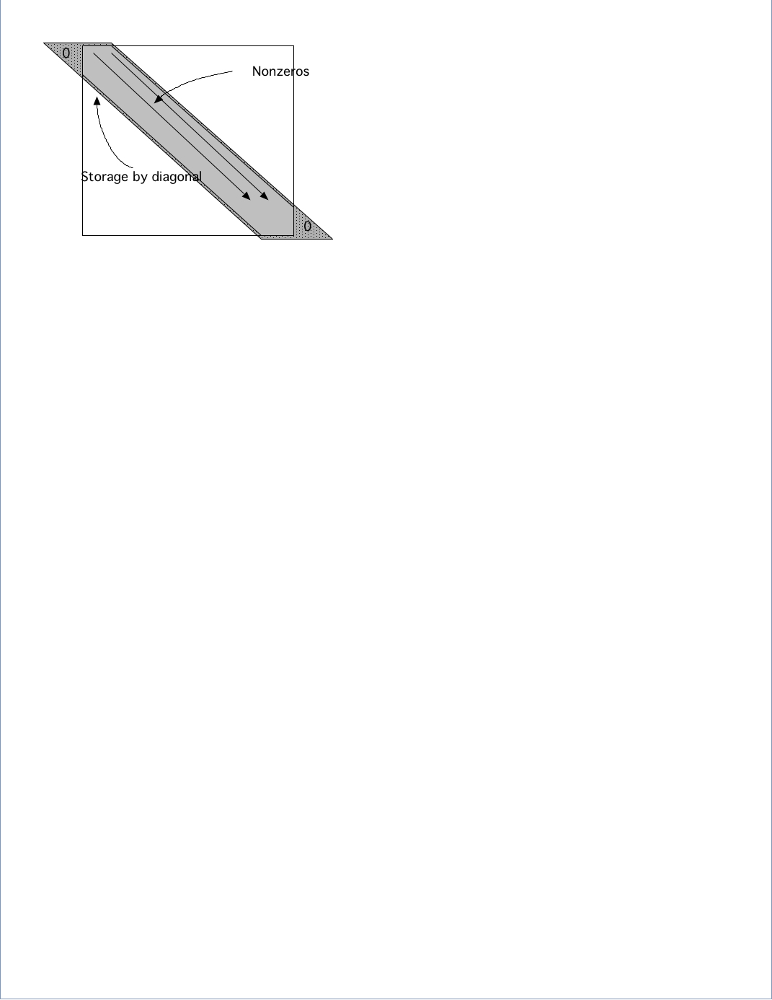FIGURE 5.1: Diagonal storage of a banded matrix
Thus, for a matrix with size $n\times n$ and a matrix bandwidth ~$p$, we need a rectangular array of size $n\times p$ to store the matrix. The matrix of equation~\eqref{eq:1d2nd-matrix-vector} would then be stored as
\begin{array}{|ccc|} \hline \star&2&-1\\ -1&2&-1\\ \vdots&\vdots&\vdots\\ -1&2&\star\\ \hline \end{array} \label{eq:2minus1-by-diagonals} \end{equation}where the stars indicate array elements that do not correspond to matrix elements: they are the triangles in the top left and bottom right in figure 5.1 .
Of course, now we have to wonder about the conversion between array elements A(i,j) and matrix elements $A_{ij}$. This is easiest done in the Fortran language. If we allocate the array with
dimension A(n,-1:1)then the main diagonal $A_{ii}$ is stored in A(*,0) . For instance, $ A(1,0) \sim A_{11}$. The next location in the same row of the matrix $A$, $ A(1,1) \sim A_{12}$. It is easy to see that together we have the conversion
A(i,j)\sim A\_{i,i+j}. \label{eq:sparse-conversion} \end{equation}What is the reverse conversion, that is, what array location A(?,?) does the matrix element $A_{ij}$ correspond to?
If you are a C programmer, derive the conversion between matrix elements $A_{ij}$ and array elements A[i][j] .
If we apply this scheme of storing the matrix as an $N\times p$ array to the matrix of the two-dimensional BVP (section 4.2.3 ), it becomes wasteful, since we would be storing many zeros that exist inside the band. Therefore, in storage by diagonals or diagonal storage we refine this scheme by storing only the nonzero diagonals: if the matrix has $p$ nonzero diagonals, we need an $n\times p$ array. For the matrix of equation \eqref{eq:5starmatrix} this means: \[ \begin{array}{|ccccc|} \hline \star&\star&4&-1&-1\\ \vdots&\vdots&4&-1&-1\\ \vdots&-1&4&-1&-1\\ -1&-1&4&-1&-1\\ \vdots&\vdots&\vdots&\vdots&\vdots\\ -1&-1&4&\star&\star\\ \hline \end{array} \] Of course, we need an additional integer array telling us the locations of these nonzero diagonals.
For the central difference matrix in $d=1,2,3$ space dimensions, what is the bandwidth as order of $N$? What is it as order of the discretization parameter $h$?In the preceding examples, the matrices had an equal number of nonzero diagonals above and below the main diagonal. In general this need not be true. For this we introduce the concepts of
If the left and right halfbandwidth are the same, we simply refer to the halfbandwidth .
crumb trail: > linear > Sparse matrices > Storage of sparse matrices > Operations on diagonal storage
The most important operation on sparse matrices is the matrix-vector product. With a matrix stored by diagonals, as described above, it is still possible to perform the ordinary rowwise or columnwise product using the conversion formula \eqref{eq:sparse-conversion}; in fact, this is how Lapack banded routines work. However, with a small bandwidth, this gives short vector lengths and relatively high loop overhead, so it will not be efficient. It is possible do to much better than that.
If we look at how the matrix elements are used in the matrix-vector product, we see that the main diagonal is used as \[ y_i \leftarrow y_i + A_{ii} x_i, \] the first superdiagonal is used as \[ y_i \leftarrow y_i + A_{ii+1} x_{i+1}\quad\hbox{for $i<n$}, \] and the first subdiagonal as \[ y_i \leftarrow y_i + A_{ii-1} x_{i-1}\quad\hbox{for $i>1$}. \] In other words, the whole matrix-vector product can be executed in just three vector operations of length $n$ (or $n-1$), instead of $n$ inner products of length 3 (or 2).
for diag = -diag_left, diag_right for loc = max(1,1-diag), min(n,n-diag) y(loc) = y(loc) + val(loc,diag) * x(loc+diag) end endWrite a routine that computes $y\leftarrow A^tx$ by diagonals. Implement it in your favorite language and test it on a random matrix. The above code fragment is efficient if the matrix is dense inside the band. This is not the case for, for instance, the matrix of two-dimensional BVPs ; see section 4.2.3 and in particular equation \eqref{eq:5starmatrix}. Write code for the matrix-vector product by diagonals that only uses the nonzero diagonals. Multiplying matrices is harder than multiplying a matrix times a vector. If matrix $A$ has left and halfbandwidth $p_A,q_Q$, and matrix $B$ has $p_B,q_B$, what are the left and right halfbandwidth of $C=AB$? Assuming that an array of sufficient size has been allocated for $C$, write a routine that computes $C\leftarrow AB$.
crumb trail: > linear > Sparse matrices > Storage of sparse matrices > Compressed row storage
If we have a sparse matrix that does not have a simple band structure, or where the number of nonzero diagonals becomes impractically large, we use the more general CRS scheme. As the name indicates, this scheme is based on compressing all rows, eliminating the zeros; see figure 5.2 .
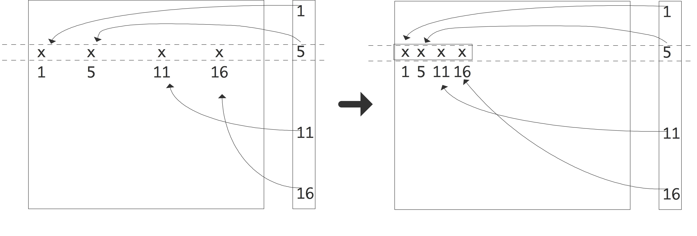FIGURE 5.2: Compressing a row of a sparse matrix in the CRS format
Since this loses the information what columns the nonzeros originally came from, we have to store this explicitly. Consider an example of a sparse matrix:
A = \left( \begin{array}{rrrrrr} 10 & 0 & 0 & 0 &-2 & 0 \\ 3 & 9 & 0 & 0 & 0 & 3 \\ 0 & 7 & 8 & 7 & 0 & 0 \\ 3 & 0 & 8 & 7 & 5 & 0 \\ 0 & 8 & 0 & 9 & 9 & 13 \\ 0 & 4 & 0 & 0 & 2 & -1 \end{array} \right) . \end{equation}After compressing all rows, we store all nonzeros in a single real array. The column indices are similarly stored in an integer array, and we store pointers to where the columns start. Using 0-based indexing this gives: \[ \begin{array}{r|rrrrrrrrrrrrrrr} \hline \mathtt{val} &10 &-2& 3& 9& 3& 7& 8& 7& 3 \cdots 9&13& 4& 2&-1 \\ \hline \mathtt{colind} & 0 & 4& 0& 1& 5& 1& 2& 3& 0 \cdots 4& 5& 1& 4& 5 \\ \hline \mathtt{rowptr} & 0 & 2 & 5 & 8 & 12 & 16 & 19 \\ \hline \end{array} \] A simple variant of CRS is CCS where the elements in columns are stored contiguously. This is also known as the Harwell-Boeing matrix format [Duff:harwellboeingformat] . Another storage scheme you may come across is coordinate storage , where the matrix is stored as a list of triplets $\langle i,j,a_{ij}\rangle$.The popular Market} website [matrix-market] uses a variant of this scheme.
crumb trail: > linear > Sparse matrices > Storage of sparse matrices > Algorithms on compressed row storage
In this section we will look at the form some algorithms take in CRS .
First we consider the implementation of the sparse matrix-vector product .
for (row=0; row<nrows; row++) { s = 0; for (icol=ptr[row]; icol<ptr[row+1]; icol++) { int col = ind[icol]; s += a[icol] * x[col]; } y[row] = s; }You recognize the standard matrix-vector product algorithm for $y=Ax$, where the inner product is taken of each row $A_{i*}$ and the input vector $x$. However, note that the inner loop no long has the column number as index, but rather the location where that number is to be found. This extra step is known as indirect addressing .
Compare the data locality of the dense matrix-vector product, executed by rows, with the sparse product given just now. Show that, for general sparse matrices, the spatial locality in addressing the input vector $x$ has now disappeared. Are there matrix structures for which you can still expect some spatial locality?Now, how about if you wanted to compute the product $y=A^tx$? In that case you need rows of $A^t$, or, equivalently, columns of $A$. Finding arbitrary columns of $A$ is hard, requiring lots of searching, so you may think that this algorithm is correspondingly hard to compute. Fortunately, that is not true.
If we exchange the $i$ and $j$ loop in the standard algorithm for $y=Ax$, we get
Original:
$y\leftarrow 0$
for $i$:
\> for $j$:
\>\> $y_i\leftarrow y_i+a_{ij}x_j$
Indices reversed:
$y\leftarrow 0$
for $j$:
\> for $i$:
\>\> $y_i\leftarrow y_i+a_{ji}x_j$
We see that in the second variant, columns of $A$ are accessed, rather than rows. This means that we can use the second algorithm for computing the $A^tx$ product by rows.
Write out the code for the transpose product $y=A^tx$ where $A$ is stored in CRS format. Write a simple test program and confirm that your code computes the right thing.What if you need access to both rows and columns at the same time? Implement an algorithm that tests whether a matrix stored in CRS format is symmetric. Hint: keep an array of pointers, one for each row, that keeps track of how far you have progressed in that row.
The operations described so far are fairly simple, in that they never make changes to the sparsity structure of the matrix. The CRS format, as described above, does not allow you to add new nonzeros to the matrix, but it is not hard to make an extension that does allow it.
Let numbers $p_i, i=1… n$, describing the number of nonzeros in the $i$-th row, be given. Design an extension to CRS that gives each row space for $q$ extra elements. Implement this scheme and test it: construct a matrix with $p_i$ nonzeros in the $i$-th row, and check the correctness of the matrix-vector product before and after adding new elements, up to $q$ elements per row.
Now assume that the matrix will never have more than a total of $qn$ nonzeros. Alter your code so that it can deal with starting with an empty matrix, and gradually adding nonzeros in random places. Again, check the correctness.
We will revisit the transpose product algorithm in section 6.5.5 in the context of shared memory parallelism.
crumb trail: > linear > Sparse matrices > Sparse matrices and graph theory
Many arguments regarding sparse matrices can be formulated in terms of graph theory. To see why this can be done, consider a matrix $A$ of size $n$ and observe that we can define a graph $\langle E,V\rangle$ by $V=\{1,…,n\}$, $E=\{(i,j)\colon a_{ij}\not=0\}$. This is called the adjacency graph of the matrix. For simplicity, we assume that $A$ has a nonzero diagonal. If necessary, we can attach weights to this graph, defined by $w_{ij}=a_{ij}$. The graph is then denoted $\langle E,V,W\rangle$. (If you are not familiar with the basics of graph theory, see appendix app:graph .)
Graph properties now correspond to matrix properties; for instance, the degree of the graph is the maximum number of nonzeros per row, not counting the diagonal element. As another example, if the graph of the matrix is an undirected graph , this means that $a_{ij}\not=0\Leftrightarrow a_{ji}\not=0$. We call such a matrix structurally symmetric : it is not truly symmetric in the sense that $\forall_{ij}\colon a_{ij}=a_{ij}$, but every nonzero in the upper triangle corresponds to one in the lower triangle and vice versa.
crumb trail: > linear > Sparse matrices > Sparse matrices and graph theory > Graph properties under permutation
One advantage of considering the graph of a matrix is that graph properties do not depend on how we order the nodes, that is, they are invariant under permutation of the matrix.
Let us take a look at what happens with a matrix $A$ when the nodes of its graph $G=\langle V,E,W\rangle$ are renumbered. As a simple example, we number the nodes backwards; that is, with $n$ the number of nodes, we map node $i$ to $n+1-i$. Correspondingly, we find a new graph $G'=\langle V,E',W'\rangle$ where \[ (i,j)\in E'\Leftrightarrow (n+1-i,n+1-j)\in E,\qquad w'_{ij}=w_{n+1-i,n+1-j}. \] What does this renumbering imply for the matrix $A'$ that corresponds to $G'$? If you exchange the labels $i,j$ on two nodes, what is the effect on the matrix $A$?Some matrix properties stay invariant under permutation. Convince your self that permutation does not change the eigenvalues of a matrix.
Some graph properties can be hard to see from the sparsity pattern of a matrix, but are easier deduced from the graph.
Let $A$ be the tridiagonal matrix of the one-dimensional BVP (see section 4.2.2 ) of size $n$ with $n$ odd. What does the graph of $A$ look like? Consider the permutation that results from putting the nodes in the following sequence: \[ 1,3,5,…,n,2,4,6,…, n-1. \]What does the sparsity pattern of the permuted matrix look like? Renumbering strategies such as this will be discussed in more detail in section 6.8.2 .
Now take this matrix and zero the offdiagonal elements closest to the `middle' of the matrix: let \[ a_{(n+1)/2,(n+1)/2+1}=a_{(n+1)/2+1,(n+1)/2}=0. \] Describe what that does to the graph of $A$. Such a graph is called reducible . Now apply the permutation of the previous exercise and sketch the resulting sparsity pattern. Note that the reducibility of the graph is now harder to read from the sparsity pattern.
crumb trail: > linear > Sparse matrices > LU factorizations of sparse matrices
In section 4.2.2 the one-dimensional BVP led to a linear system with a tridiagonal coefficient matrix. If we do one step of Gaussian elimination, the only element that needs to be eliminated is in the second row: \[ \begin{pmatrix} 2&-1&0&…\\ -1&2&-1\\ 0&-1&2&-1\\ &\ddots&\ddots&\ddots&\ddots \end{pmatrix} \quad\Rightarrow\quad \left( \begin{array}{c|cccc} 2&-1&0&…\\ \hline 0&2-\frac12&-1\\ 0&-1&2&-1\\ &\ddots&\ddots&\ddots&\ddots \end{array} \right) \] There are two important observations to be made: one is that this elimination step does not change any zero elements to nonzero. The other observation is that the part of the matrix that is left to be eliminated is again tridiagonal. Inductively, during the elimination no zero elements change to nonzero: the sparsity pattern of $L+U$ is the same as of $A$, and so the factorization takes the same amount of space to store as the matrix.
The case of tridiagonal matrices is unfortunately not typical, as we will shortly see in the case of two-dimensional problems. But first we will extend the discussion on graph theory of section 5.4.2 to factorizations.
crumb trail: > linear > Sparse matrices > LU factorizations of sparse matrices > Graph theory of sparse LU factorization
Graph theory is often useful when discussion the LU factorization of a sparse matrix Let us investigate what eliminating the first unknown (or sweeping the first column) means in graph theoretic terms. We are assuming a structurally symmetric matrix.
We consider eliminating an unknown as a process that takes a graph $G=\langle V,E\rangle$ and turns it into a graph $G'=\langle V',E'\rangle$. The relation between these graphs is first that a vertex, say $k$, has been removed from the vertices: $k\not\in V'$, $V'\cup \{k\}=V$.
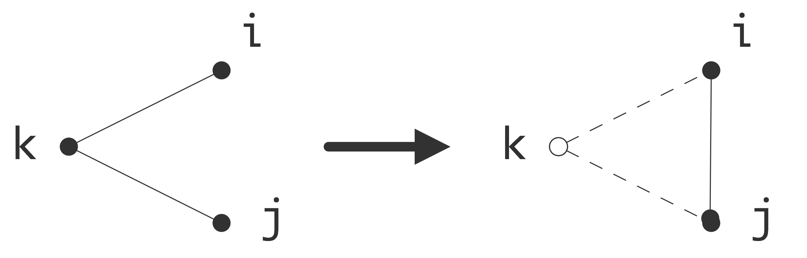\caption{Eliminating a vertex introduces a new edge in the quotient graph}
The relationship between $E$ and $E'$ is more complicated. In the Gaussian elimination algorithm the result of eliminating variable $k$ is that the statement \[ a_{ij} \leftarrow a_{ij}- a_{ik}a_{kk}\inv a_{kj} \] is executed for all $i,j\not=k$. If $a_{ij}\not=0$ originally, that is, $(i,j)\in E$, then the value of $a_{ij}$ is merely altered. In case $a_{ij}=0$ in the original matrix, meaning $(i,j)\not\in E$, there will be a nonzero element, termed a fill-in element, after the $k$ unknown is eliminated: \[ (i,j)\not\in E\quad\hbox{but}\quad (i,j)\in E'. \] This is illustrated in figure 5.3 .
Summarizing, eliminating an unknown gives a graph that has one vertex less, and that has edges for all $i,j$ such that there were edges between $i$ or $j$ and the eliminated variable $k$.
\def\magfact{.45}
\hbox{\vbox{\hsize= .6\textwidth 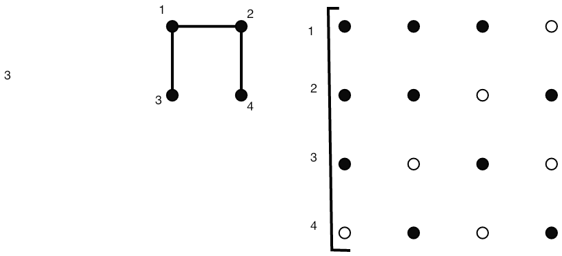 }\vbox{\hsize= \magfact\textwidth Original matrix. }}\medskip
\hbox{\vbox{\hsize= .6\textwidth 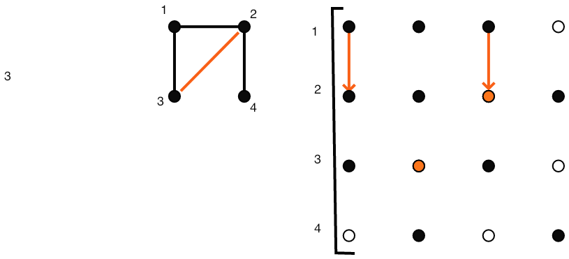 }\vbox{\hsize= \magfact\textwidth Eliminating $(2,1)$ causes fill-in at $(2,3)$. }}\medskip
\hbox{\vbox{\hsize= .6\textwidth }\vbox{\hsize= \magfact\textwidth Remaining matrix when step 1 finished. }}\medskip
\hbox{\vbox{\hsize= .6\textwidth 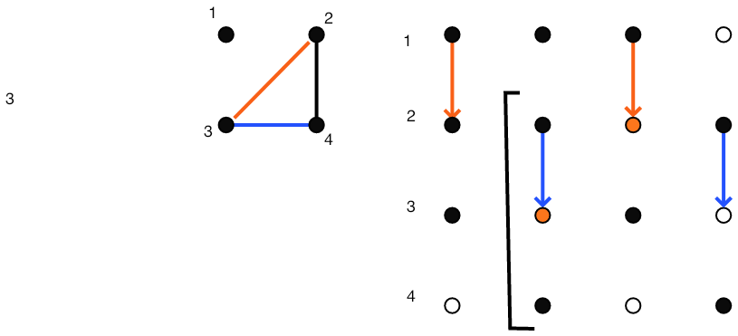 }\vbox{\hsize= \magfact\textwidth Eliminating $(3,2)$ fills $(3,4)$ }}\medskip
\hbox{\vbox{\hsize= .6\textwidth 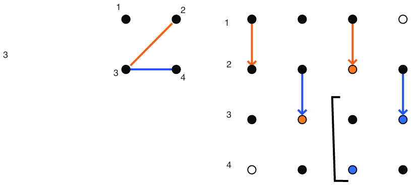 }\vbox{\hsize= \magfact\textwidth After step 2 }}
FIGURE 5.4: Gaussian elimination of a sparse matrix
Figure 5.4 gives a full illustration on a small matrix.
Go back to exercise 5.4.2.1 . Use a graph argument to determine the sparsity pattern after the odd variables have been eliminated.Prove the generalization of the above argument about eliminating a single vertex. Let $I\subset V$ be any set of vertices, and let $J$ be the vertices connected to $I$: \[ J\cap I=\emptyset,\quad \forall_{i\in I}\exists_{j\in J}\colon (i,j)\in E. \] Now show that eliminating the variables in $I$ leads to a graph $\langle V',E'\rangle$ where all nodes in $J$ are connected in the remaining graph, if there was a path between them through $I$: \[ \forall_{j_1,j_2\in J}\colon \hbox{there is a path $j_i\rightarrow j_2$ through $I$ in $E$} \Rightarrow (j_1,j_2)\in E'. \]
crumb trail: > linear > Sparse matrices > LU factorizations of sparse matrices > Fill-in
We now return to the factorization of the matrix from two-dimensional problems. We write such matrices of size $N\times N$ as block matrices with block dimension $n$, each block being of size $n$. (Refresher question: where do these blocks come from?) Now, in the first elimination step we need to zero two elements, $a_{21}$ and $a_{n+1,1}$.
{\small \[ \left( \begin{array}{ccccc:cccc} 4&-1&0&…&&-1\\ -1&4&-1&0&…&0&-1\\ &\ddots&\ddots&\ddots&&&\ddots\\ \hdashline -1&0&…&&&4&-1\\ 0&-1&0&…&&-1&4&-1\\ \end{array} \right) \quad\Rightarrow\quad \left( \begin{array}{c|cccc:cccc} 4&-1&0&…&&-1\\ \hline &4-\frac14&-1&0&…&-1/4&-1\\ &\ddots&\ddots&\ddots&&&\ddots&\ddots\\ \hdashline &-1/4&&&&4-\frac14&-1\\ &-1&0&&&-1&4&-1\\ \end{array} \right) \] }
You see that eliminating $a_{21}$ and $a_{n+1,1}$ causes two fill $a_{n+1,2}$ are zero, but in the modified matrix these locations are nonzero. We define fill locations as locations $(i,j)$ where $a_{ij}=0$, but $(L+U)_{ij}\not=0$.
Clearly the matrix fills in during factorization. With a little imagination you can also see that every element in the band outside the first diagonal block will fill in. However, using the graph approach of section 5.4.3.1 it becomes easy to visualize the fill-in connections that are created.
In figure 5.5 this is illustrated for the graph of the 2d BVP example. (The edges corresponding to diagonal elements have not been pictured here.)
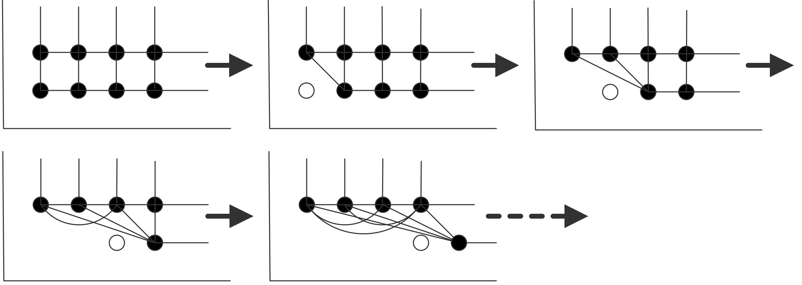FIGURE 5.5: Creation of fill-in connection in the matrix graph
Each variable in the first row that is eliminated creates connections between the next variable and the second row, and between variables in the second row. Inductively you see that after the first row is eliminated the second row is fully connected. (Connect this to exercise 5.4 .)
Finish the argument. What does the fact that variables in the second row are fully connected imply for the matrix structure? Sketch in a figure what happens after the first variable in the second row is eliminated.The LAPACK software for dense linear algebra has an LU factorization routine that overwrites the input matrix with the factors. Above you saw that is possible since the columns of $L$ are generated precisely as the columns of $A$ are eliminated. Why is such an algorithm not possible if the matrix is stored in sparse format?
crumb trail: > linear > Sparse matrices > LU factorizations of sparse matrices > Fill-in estimates
In the above example you saw that the factorization of a sparse matrix can take much more space than the matrix itself, but still less than storing an entire square array of size the matrix dimension. We will now give some bounds for the space complexity of the factorization, that is, the amount of space needed to execute the factorization algorithm.
Prove the following statements.As a result, $L$ and $U$ have a `skyline' profile. Given a sparse matrix, it is now easy to allocate enough storage to fit a factorization without pivoting: this is knows as skyline storage .
Consider the matrix \[ A= \begin{pmatrix} a_{11}&0 &a_{13}& & & & &\emptyset \\ 0 &a_{22}&0 &a_{24}\\ a_{31}&0 &a_{33}&0 &a_{35}\\ &a_{42}&0 &a_{44}&0 &a_{46}\\ & &\ddots&\ddots&\ddots&\ddots &\ddots\\ \emptyset && & & &a_{n,n-1}&0 &a_{nn}\\ \end{pmatrix} \] You have proved earlier that any fill-in from performing an $LU$ factorization is limited to the band that contains the original matrix elements. In this case there is no fill-in. Prove this inductively.
Look at the adjacency graph. (This sort of graph has a name. What is it?) Can you give a proof based on this graph that there will be no fill-in?
Exercise 5.4.3.3 shows that we can allocate enough storage for the factorization of a banded matrix:
We can apply this estimate to the matrix from the two-dimensional BVP , section 4.2.3 .
Show that in equation \eqref{eq:5starmatrix} the original matrix has $O(N)=O(n^2)$ nonzero elements, $O(N^2)=O(n^4)$ elements in total, and the factorization has $O(nN)=O(n^3)=O(N^{3/2})$ nonzeros.These estimates show that the storage required for an $LU$ factorization can be more than what is required for $A$, and the difference is not a constant factor, but related to the matrix size. Without proof we state that the inverses of the kind of sparse matrices you have seen so far are fully dense, so storing them takes even more. This is an important reason that solving linear systems $Ax=y$ is not done in practice by computing $A\inv$ and subsequently multiplying $x=A\inv y$. (Numerical stability is another reason that this is not done.) The fact that even a factorization can take a lot of space is one reason for considering iterative methods, as we will do in section 5.5 .
Above, you saw that the factorization of a dense matrix of size $n\times n$ takes $O(n^3)$ operations. How is this for a sparse matrix? Let us consider the case of a matrix with halfbandwidth $p$, and assume that the original matrix is dense in that band. The pivot element $a_{11}$ is used to zero $p$ elements in the first column, and for each the first row is added to that row, involving $p$ multiplications and additions. In sum, we find that the number of operations is roughly \[ \sum_{i=1}^n p^2 = p^2\cdot n \] plus or minus lower order terms.
The assumption of a band that is initially dense is not true for the matrix of a two-dimensional BVP . Why does the above estimate still hold, up to some lower order terms?In exercise 5.4.3.3 above you derived an estimate for the amount of fill-in that is easy to apply. However, it can be a considerable overestimate. It is desirable to compute or estimate the amount of fill-in with less work than doing the actual factorization. We will now sketch an algorithm for finding the exact number of nonzeros in $L+U$, with a cost that is linear in this number. We will do this in the (structurally) symmetric case. The crucial observation is the following. Suppose column $i$ has more than one nonzero below the diagonal: \[ \begin{pmatrix} \ddots\\ &a_{ii}&&a_{ij}&&a_{ik}\\ &&\ddots\\ &a_{ji}&&a_{jj}\\ &&&&\ddots\\ &a_{ki}&&?a_{kj}?&&a_{kk}\\ \end{pmatrix} \] Eliminating $a_{ki}$ in the $i$-th step causes an update of $a_{kj}$, or a fill-in element if originally $a_{kj}=0$. However, we can infer the existence of this nonzero value: eliminating $a_{ji}$ causes a fill-in element in location $(j,k)$, and we know that structural symmetry is preserved. In other words, if we are only counting nonzeros, it is enough to look at the effects of eliminating the $(j,i)$ location, or in general the first nonzero below the pivot. Following this argument through, we only need to record the nonzeros in one row per pivot, and the entire process has a complexity linear in the number of nonzeros in the factorization.
crumb trail: > linear > Sparse matrices > LU factorizations of sparse matrices > Fill-in reduction
Graph properties of a matrix, such as degree and diameter, are invariant under renumbering the variables. Other properties, such as fill-in during a factorization, are affected by renumbering. In fact, it is worthwhile investigating whether it is possible to reduce the amount of fill-in by renumbering the nodes of the matrix graph, or equivalently, by applying a permutation to the linear system.
Consider the `arrow' matrix with nonzeros only in the first row and column and on the diagonal: \[ \begin{pmatrix} *&*&\cdots&*\\ *&*&&\emptyset\\ \vdots&&\ddots\\ *&\emptyset&&* \end{pmatrix} \] What is the number of nonzeros in the matrix, and in the factorization, assuming that no addition ever results in zero? Can you find a symmetric permutation of the variables of the problem such that the new matrix has no fill-in?This example is not typical, but it is true that fill-in estimates can sometimes be improved upon by clever permuting of the matrix (see for instance section 6.8.1 ). Even with this, as a rule the statement holds that an $LU$ factorization of a sparse matrix takes considerably more space than the matrix itself. This is one of the motivating factors for the iterative methods in the next section.
crumb trail: > linear > Sparse matrices > LU factorizations of sparse matrices > Fill-in reducing orderings
Some matrix properties are invariant under symmetric permutations.
In linear algebra classes, you typically look at matrix properties and whether they are invariant under a change of basis, in particular under unitary basis transformations : \[ B = VAV^t,\quad\hbox{where $VV^t=I$.} \] Show that a symmetric permutation is a particular change of basis. Name some matrix properties that do not change under unitary transformations.Other properties are not: in the previous section you saw that the amount of fill-in is one of those. Thus, you may wonder what the best ordering is to reduce the fill-in of factoring a given matrix. This problem is intractable in practice, but various heuristics exist. Some of these heuristics can also be justified from a point of view of parallelism; in fact, the nested dissection ordering will only be discussed in the section on parallelism 6.8.1 . Here we briefly show two other heuristics that predate the need for parallelism.
First we will look at the Cuthill-McKee ordering which directly minimizes the bandwidth of the permuted matrix. Since the amount of fill-in can be bounded in terms of the bandwidth, we hope that such a bandwidth reducing ordering will also reduce the fill-in.
Secondly, we will consider the minimum degree ordering , which aims more directly for fill-in reduction.
crumb trail: > linear > Sparse matrices > LU factorizations of sparse matrices > Fill-in reducing orderings > Cuthill-McKee ordering
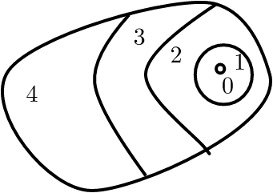
WRAPFIGURE 5.6: Level sets
{r}{2in} The Cuthill-McKee ordering [CuMcK:reducing] is a bandwidth reducing ordering that works by ordering the variables in level set s; figure 5.6 . It considers the adjacency graph of the matrix, and proceeds as follows:
We will revisit this algorithm in section 6.9.1 when we consider parallelism.
Of course, one can wonder just how far the bandwidth can be reduced.
The diameter of a graph is defined as the maximum shortest distance between two nodes.
crumb trail: > linear > Sparse matrices > LU factorizations of sparse matrices > Fill-in reducing orderings > Minimum degree ordering
Another ordering is motivated by the observation that the amount of fill-in is related to the degree of nodes.
Show that eliminating a node with degree $d$ leads to at most $2d$ fill elementsThe so-called minimum degree ordering proceeds as follows:
Indicate a difference between the two above-mentioned methods. Both are based on inspection of the matrix graph; however, the minimum degree method requires much more flexibility in the data structures used. Explain why and discuss two aspects in detail.
crumb trail: > linear > Iterative methods
Gaussian elimination, the use of an $LU$ factorization, is a simple way to find the solution of a linear system, but as we saw above, in the sort of problems that come from discretized PDE s, it can create a lot of fill-in. In this section we will look at a completely different approach, iterative solution , where the solution of the system is found by a sequence of approximations.
The computational scheme looks, very roughly, like: \[ \begin{cases} \mbox{Choose any starting vector $x_0$ and repeat for $i\geq0$:}\\ x_{i+1}=Bx_i+c\\ \mbox{until some stopping test is satisfied.} \end{cases} \] The important feature here is that no systems are solved with the original coefficient matrix; instead, every iteration involves a matrix-vector multiplication or a solution of a much simpler system. Thus we have replaced a complicated operation, constructing an $LU$ factorization and solving a system with it, by a repeated simpler and cheaper operation. This makes iterative methods easier to code, and potentially more efficient.
Let us consider a simple example to motivate the precise definition of the iterative methods. Suppose we want to solve the system \[ \left( \begin{matrix} 10&0&1\\ 1/2&7&1\\ 1&0&6 \end{matrix} \right) \left( \begin{matrix} x_1\\ x_2\\ x_3 \end{matrix} \right) = \left( \begin{matrix} 21\\ 9\\ 8 \end{matrix} \right) \] which has the solution $(2,1,1)$. Suppose you know (for example, from physical considerations) that solution components are roughly the same size. Observe the dominant size of the diagonal, then, to decide that \[ \left( \begin{matrix} 10&\\ &7\\ &&6 \end{matrix} \right) \left( \begin{matrix} x_1\\ x_2\\ x_3 \end{matrix} \right) = \left( \begin{matrix} 21\\ 9\\ 8 \end{matrix} \right) \] might be a good approximation. This has the solution $(2.1,9/7,8/6)$. Clearly, solving a system that only involves the diagonal of the original system is both easy to do, and, at least in this case, fairly accurate.
Another approximation to the original system would be to use the lower triangle. The system \[ \left( \begin{matrix} 10\\ 1/2&7\\ 1&0&6 \end{matrix} \right) \left( \begin{matrix} x_1\\ x_2\\ x_3 \end{matrix} \right) = \left( \begin{matrix} 21\\ 9\\ 8 \end{matrix} \right) \] has the solution $(2.1,7.95/7,5.9/6)$. Solving triangular systems is a bit more work than diagonal systems, but still a lot easier than computing an $LU$ factorization. Also, we have not generated any fill-in in the process of finding this approximate solution.
Thus we see that there are easy to compute ways of getting reasonably close to the solution. Can we somehow repeat this trick?
Formulated a bit more abstractly, what we did was instead of solving $Ax=b$ we solved $L\tilde x=b$. Now define $\Delta x$ as the distance from the true solution: $\tilde x=x+\Delta x$. This gives $A\Delta x=A\tilde x-b\equiv r$, where $r$ is the residual . Next we solve again $L\widetilde{\Delta x}=r$ and update $\tilde{\tilde x}=\tilde x-\widetilde{\Delta x}$.
| iteration | 1 | 2 | 3 |
| $x_1$ | 2.1000 | 2.0017 | 2.000028 |
| $x_2$ | 1.1357 | 1.0023 | 1.000038 |
| $x_3$ | 0.9833 | 0.9997 | 0.999995\ |
In this case we get two decimals per iteration, which is not typical.
It is now clear why iterative methods can be attractive. Solving a system by Gaussian elimination takes $O(n^3)$ operations, as shown above. A~single iteration in a scheme as the above takes $O(n^2)$ operations if the matrix is dense, and possibly as low as $O(n)$ for a sparse matrix. If the number of iterations is low, this makes iterative methods competitive.
When comparing iterative and direct methods, the flop count is not the only relevant measure. Outline some issues relating to the efficiency of the code in both cases. Also compare the cases of solving a single linear system and solving multiple.
crumb trail: > linear > Iterative methods > Abstract presentation
It is time to do a formal presentation of the iterative scheme of the above example. Suppose we want to solve $Ax=b$, and a direct solution is too expensive, but multiplying by $A$ is feasible. Suppose furthermore that we have a matrix $K\approx A$ such that solving $Kx=b$ can be done cheaply.
Instead of solving $Ax=b$ we solve $Kx=b$, and define $x_0$ as the solution: $Kx_0=b$. This leaves us with an error $e_0=x_0-x$, for which we have the equation $A(x_0-e_0)=b$ or $Ae_0=Ax_0-b$. We call $r_0\equiv Ax_0-b$ the residual ; the error then satisfies $Ae_0=r_0$.
If we could solve the error from the equation $Ae_0=r_0$, we would be done: the true solution is then found as $x=x_0-e_0$. However, since solving with $A$ was too expensive the last time, we can not do so this time either, so we determine the error correction approximately. We solve $K\tilde e_0=r_0$ and set $x_1:=x_0-\tilde e_0$; the story can now continue with $e_1=x_1-x$, $r_1=Ax_1-b$, $K\tilde e_1=r_1$, $x_2=x_1-\tilde e_1$, et cetera.
The iteration scheme is then:
Let $x_0$ be given
For $i\geq0$:
\>let $r_i=Ax_i-b$
\>compute $e_i$ from $Ke_i=r_i$
\>update $x_{i+1}=x_i-e_i$
We call the basic scheme
x\_{i+1}=x\_i-K\inv r\_i \label{eq:stat-it} \end{equation}a stationary iteration . It is stationary because every update is performed the same way, without any dependence on the iteration number. This scheme has a simple analysis, but unfortunately limited applicability.
There are several questions we need to answer about iterative schemes:
We will now devote some attention to these matters, though a full discussion is beyond the scope of this book.
crumb trail: > linear > Iterative methods > Convergence and error analysis
We start with the question of whether the iterative scheme converges, and how quickly. Consider one iteration step:
\begin{array}{r@{{}={}}l} r\_1&Ax\_1-b=A(x\_0-\tilde e\_0)-b\\ &r\_0-AK\inv r\_0\\ &(I-AK\inv)r\_0 \end{array} \end{equation}Inductively we find $r_n=(I-AK\inv)^nr_0$, so $r_n\downarrow0$ if all eigenvalues satisfy $|\lambda(I-AK\inv)|<1$
{This is fairly easy to see in the case where the matrix is diagonalizable and has a full basis of eigenvectors. However, it is true in the general case too.} ).
This last statement gives us both a condition for convergence, by relating $K$ to $A$, and a geometric convergence rate, if $K$ is close enough.
Derive a similar inductive relation for $e_n$.It is hard to determine if the condition $|\lambda(I-AK\inv)|<1$ is satisfied by computing the actual eigenvalues. However, sometimes the Gershgorin theorem (appendix 13.5 ) gives us enough information.
Consider the matrix $A$ of equation \eqref{eq:5starmatrix} that we obtained from discretization of a two-dimensional BVP . Let $K$ be matrix containing the diagonal of $A$, that is $k_{ii}=a_{ii}$ and $k_{ij}=0$ for $i\not=j$. Use the Gershgorin theorem to show that $|\lambda(I-AK\inv)|<1$.The argument in this exercise is hard to generalize for more complicated choices of $K$, such as you will see below. Here we only remark that for certain matrices $A$, these choices of $K$ will always lead to convergence, with a speed that decreases as the matrix size increases. We will not go into the details beyond stating that for $M$-matrices (see section 4.2.2 ) these iterative methods converge. For more details on the convergence theory of stationary iterative methods, see [Varga:iterative-analysis]
crumb trail: > linear > Iterative methods > Computational form
Above, in section 5.5.1 , we derived stationary iteration as a process that involves multiplying by $A$ and solving with $K$. However, in some cases a simpler implementation is possible. Consider the case where $A=K-N$, and we know both $K$ and $N$. Then we write $Ax=b$ as
Kx=Nx+b \label{eq:kx=nx} \end{equation}and we observe that an $x$ satisfying \eqref{eq:kx=nx} is a fixed point of the iteration \[ Kx^{(n+1)}=Nx^{(i)}+b. \] It is easy to see that this is a stationary iteration: \[ \begin{array}{r@{{}={}}l} Kx^{(n+1)}&Nx^{(i)}+b\\ &Kx^{(n)}-Ax^{(n)}+b\\ &Kx^{(n)}-r^{(n)}\\ \Rightarrow x^{(n+1)} & x^{(n)}-K\inv r^{(n)}. \end{array} \] which is the basic form of equation \eqref{eq:stat-it}. The convergence criterion $|\lambda(I-AK\inv)|<1$ (see above) now simplifies to $|\lambda(NK\inv)|<1$.
Let us consider some special cases. First of all, let $K=D_A$, that is, the matrix containing the diagonal part of $A$: $k_{ii}=a_{ii}$ and $k_{ij}=0$ for all \mbox{$i\not=j$}. Likewise, $n_{ii}=0$ and $n_{ij}=-a_{ij}$ for all $i\not= j$.
This is known as the Jacobi method method. The iteration scheme $Kx^{(n+1)}=Nx^{(n)}+b$ now becomes
for $t=1,…$ until convergence, do:
\>for $i=1… n$:
\>\>{\tt //} $a_{ii}x^{(t+1)}_i = \sum_{j\not=i}
a_{ij}x^{(t)}_j+b_i$ becomes:
\>\>$x^{(t+1)}_i = a_{ii}\inv(\sum_{j\not=i} a_{ij}x^{(t)}_j+b_i)$
(Bearing in mind that divisions are relatively costly, section 1.2 , we would actually store the $a_{ii}\inv$ quantities explicitly, and replace the division by a multiplication.)
This requires us to have one vector $x$ for the current iterate $x^{(t)}$, and one temporary $u$ for the next vector $x^{(t+1)}$. The easiest way to write this is probably:
for $t=1,…$ until convergence, do:
\>for $i=1… n$:
\>\>$u_i = a_{ii}\inv (-\sum_{j\not=i} a_{ij}x_j+b_i)$
\>copy $x\leftarrow u$
For the simple case of a one-dimensional problem this is illustrated in figure 5.7 :
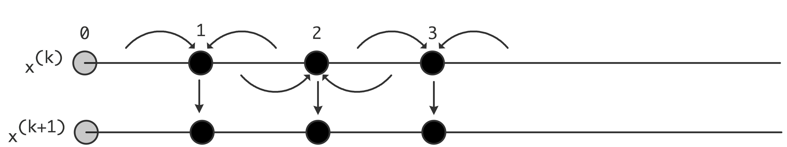\caption{Data movement pattern in the Jacobi iteration on a one-dimensional problem}
in each $x_i$ point the values of the two neighbors are combined with the current value to generate a new value. Since the computations in all the $x_i$ points are independent, this can be done in parallel on a parallel computer.
But, you might think, in the sum $\sum_{j\not=i} a_{ij}x_j$ why not use the $x^{(t+1)}$ values for as far as already computed? In terms of the vectors $x^{(t)}$ this means
for $k=1,…$ until convergence, do:
\>for $i=1… n$:
\>\>$x^{(t+1)}_i = a_{ii}\inv (-\sum_{j<i} a_{ij}x_j^{(t+1)} -
\sum_{j>i} a_{ij}x_j^{(t)}+b_i)$
Surprisingly, the implementation is simpler than of the Jacobi method:
for $t=1,…$ until convergence, do:
\>for $i=1… n$:
\>\>$x_i = a_{ii}\inv (-\sum_{j\not=i} a_{ij}x_j +b_i)$
If you write this out as a matrix equation, you see that the newly computed elements elements $x^{(t+1)}_i$ are multiplied with elements of $D_A+L_A$, and the old elements $x^{(t)}_j$ by $U_A$, giving \[ (D_A+L_A)x^{(k+1)}=-U_Ax^{(k)}+b \] which is called the Gauss-Seidel method.
For the one-dimensional case, the Gauss-Seidel method is illustrated in figure 5.8 ; every $x_i$ point
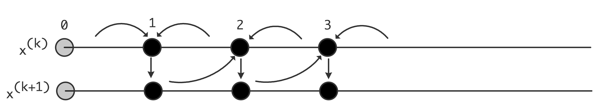\caption{Data movement pattern in the Gauss-Seidel iteration on a one-dimensional problem}
still combines its neighbors' values, but now the left value is actually from the next outer iteration.
Finally, we can insert a damping parameter into the Gauss-Seidel scheme, giving the SOR method:
for $t=1,…$ until convergence, do:
\>for $i=1… n$:
\>\>$x^{(t+1)}_i = \omega a_{ii}\inv (-\sum_{j<i} a_{ij}x_j^{(t+1)} -
\sum_{j>i} a_{ij}x_j^{(t)} + b_i)
+(1-\omega)x^{(t)}$
Surprisingly for something that looks like an interpolation, the method actually works with value for $\omega$ in the range $\omega\in(0,2)$, the optimal value being larger than $1$ [HaYo:applied] . Computing the optimal $\omega$ is not simple.
crumb trail: > linear > Iterative methods > Convergence of the method
We are interested in two questions: firstly whether the iterative method converges at all, and if so, with what speed. The theory behind these questions goes far beyond this book. Above we remarked that convergence can often be guaranteed for $M$-matrices; with regard to the convergence speed a full analysis is usually only possible in model cases. For the matrices from BVPs , as described in section 4.2.3 , we state without proof that the smallest eigenvalue of the coefficient matrix is $O(h^2)$. The geometric convergence ratio $|\lambda(I-AK\inv)|$ derived above can then be shown to be as follows:
crumb trail: > linear > Iterative methods > Jacobi versus Gauss-Seidel and parallelism
Above, we mostly looked at the Jacobi, Gauss-Seidel, and SOR methods from a mathematical perspective. However, such considerations are largely superseded by matters of parallelization on modern computers.
First we observe that all computations in one iteration of the Jacobi method are completely independent, so they can simply be vectorized or done in parallel. That story is different for Gauss-Seidel (and we ignore SOR from now on, since it only differs from Gauss-Seidel in the damping parameter): since the computation of the $x_i$ points of one iteration are now dependent, this type of iteration is not simple to vectorize or to implement on a parallel computer.
In many cases, both methods are considered superseded by the CG or GMRES methods (sections 5.5.11 and 5.5.13 ). The Jacobi method is sometimes used as a preconditioner for these methods. One place where Gauss-Seidel is still popular is as a multigrid smoother . In that case, parallelism is often found by using a red-black ordering of the variables.
Further discussion of these issues can be found in section 6.7 .
crumb trail: > linear > Iterative methods > Choice of $K$
The convergence and error analysis above showed that the closer $K$ is to $A$, the faster the convergence will be. In the initial examples we already saw the diagonal and lower triangular choice for $K$. We can describe these formally by letting $A=D_A+L_A+U_A$ be a splitting into diagonal, lower triangular, upper triangular part of $A$. Here are some methods with their traditional names:
The Jacobi iteration for the linear system $Ax=b$ is defined as \[ x_{i+1}=x_i-K^{-1}(Ax_i-b) \] where $K$ is the diagonal of $A$. Show that you can transform the linear system (that is, find a different coefficient matrix and right hand side vector that will still have the same solution) so that you can compute the same $x_i$ vectors but with $K=I$, the identity matrix.
What are the implications of this strategy, in terms of storage and operation counts? Are there special implications if $A$ is a sparse matrix?
Suppose $A$ is symmetric. Give a simple example to show that $K^{-1}A$ does not have to be symmetric. Can you come up with a different transformation of the system so that symmetry of the coefficient matrix is preserved and that has the same advantages as the transformation above? You can assume that the matrix has positive diagonal elements.
Show that the transformation of the previous exercise can also be done for the Gauss-Seidel method. Give several reasons why this is not a good idea.
Stationary iteration can be considered as a form of inexact Newton's method , where each iteration uses the same approximation to the inverse of the derivative. Standard functional analysis results [Kantorovich:functional] state how far this approximation can deviate from the exact inverse.
A special case is iterative refinement , where the Newton method should converge in one step, but in practice takes multiple steps because of roundoff in computer arithmetic. The fact that the Newton method will converge as long as the function (or the residual) is calculated accurately enough, can be exploited by doing the LU solution in lower precision, thus getting higher performance [Dongarra:mixed-refinement] .
There are many different ways of choosing the preconditioner matrix $K$. Some of them are defined algebraically, such as the incomplete factorization discussed below. Other choices are inspired by the differential equation. For instance, if the operator is \[ \frac\delta{\delta x}(a(x,y)\frac\delta{\delta x}u(x,y)) + \frac\delta{\delta y}(b(x,y)\frac\delta{\delta y}u(x,y)) = f(x,y) \] then the matrix $K$ could be derived from the operator \[ \frac\delta{\delta x}(\tilde a(x)\frac\delta{\delta x}u(x,y)) + \frac\delta{\delta y}(\tilde b(y)\frac\delta{\delta y}u(x,y)) = f(x,y) \] for some choices of $\tilde a,\tilde b$. The second set of equations is called a separable problem , and there are fast solvers for them, meaning that they have $O(N\log N)$ time complexity; see [Wi:fastseparable] .
crumb trail: > linear > Iterative methods > Choice of $K$ > Constructing $K$ as an incomplete LU factorization
We briefly mention one other choice of $K$, which is inspired by Gaussian elimination. As in Gaussian elimination, we let $K=LU$, but now we use an ILU factorization. Remember that a regular $LU$ factorization is expensive because of the fill-in phenomenon. In an incomplete factorization, we limit the fill-in artificially.
If we write Gauss elimination as
for k,i,j: a[i,j] = a[i,j] - a[i,k] * a[k,j] / a[k,k]we define an incomplete variant by
for k,i,j: if a[i,j] not zero: a[i,j] = a[i,j] - a[i,k] * a[k,j] / a[k,k]The algorithm above is called `ILU(0)', where the zero refers to the fact that absolutely no fill-in is allowed during the incomplete factorization. Other schemes that allow a limited amount of fill-in exist. Much more can be said about this method; we will only remark that for $M$-matrices this scheme typically gives a converging method [MevdVo:itsol] .
How do operation counts of the matrix-vector product and solving a system with an ILU factorization compare?You have seen that a full factorization of sparse matrix can need a higher order storage ($N^{3/2}$ for the factorization versus $N$ for the matrix), but that an incomplete factorization takes $O(N)$, just like the matrix. It may therefore come as a surprise that the error matrix $R=A-LU$ is not dense, but itself sparse.
Let $A$ be the matrix of the Poisson equation, $LU$ an incomplete factorization, and $R=A-LU$. Show that $R$ is a bi-diagonal matrix:
crumb trail: > linear > Iterative methods > Choice of $K$ > Cost of constructing a preconditioner
In the example of the heat equation (section 4.3 ) you saw that each time step involves solving a linear system. As an important practical consequence, any setup cost for solving the linear system, such as constructing the preconditioner, will be amortized over the sequence of systems that is to be solved. A similar argument holds in the context of nonlinear equations, a topic that we will not discuss as such. Nonlinear equations are solved by an iterative process such as Newton's method , which in its multidimensional form leads to a sequence of linear systems. Although these have different coefficient matrices, it is again possible to amortize setup costs by reusing the preconditioner for a number of Newton steps.
crumb trail: > linear > Iterative methods > Choice of $K$ > Parallel preconditioners
Constructing and using a preconditioner is a balancing act of many considerations: a more accurate preconditioner leads to convergence in fewer iterations, but these iterations can be more expensive; in addition, a more accurate preconditioner can be more costly to construct. In parallel, this story is even more complicated, because certain preconditioners are not very parallel to begin with. Therefore, we may accept a preconditioner that is parallel, but that has a worse iteration count than a serial preconditioner. For more discussion, see section 6.7 .
crumb trail: > linear > Iterative methods > Stopping tests
The next question we need to tackle is when to stop iterating. Above we saw that the error decreases geometrically, so clearly we will never reach the solution exactly, even if that were possible in computer arithmetic. Since we only have this relative convergence behavior, how do we know when we are close enough?
We would like the error $e_i=x-x_i$ to be small, but measuring this is impossible. Above we observed that $Ae_i=r_i$, so \[ \|e_i\|\leq \|A\inv\|\|r_i\| \leq \lambda_{\max}(A\inv)\|r_i\| \] If we know anything about the eigenvalues of $A$, this gives us a bound on the error. (The norm of $A$ is only the largest eigenvalue for symmetric $A$. In general, we need singular values here.)
Another possibility is to monitor changes in the computed solution. If these are small: \[ \| x_{n+1}-x_n\|/\|x_n\|<\epsilon \] we can also conclude that we are close to the solution.
Prove an analytic relationship between the distance between iterates and the distance to the true solution. If your equation contains constants, can they be determined theoretically or in practice?Write a simple program to experiment with linear system solving. Take the matrix from the 1D BVP (use an efficient storage scheme) and program an iterative method using the choice $K=D_A$. Experiment with stopping tests on the residual and the distance between iterates. How does the number of iterations depend on the size of the matrix?
Change the matrix construction so that a certain quantity is added the diagonal, that is, add $\alpha I$ to the original matrix. What happens when $\alpha>0$? What happens when $\alpha<0$? Can you find the value where the behavior changes? Does that value depend on the matrix size?
crumb trail: > linear > Iterative methods > Theory of general polynomial iterative methods
Above, you saw iterative methods of the form $x_{i+1}=x_i-K\inv r_i$, and we will now see iterative methods of the more general form
x\_{i+1}=x\_i+\sum\_{j\leq i}K\inv r\_j\alpha\_{ji}, \label{eq:it-general-x} \end{equation}that is, using all previous residuals to update the iterate. One might ask, `why not introduce an extra parameter and write $x_{i+1}=\alpha_i x_i+\cdots$?' Here we give a short argument that the former scheme describes a large class of methods. Indeed, the current author is not aware of methods that fall outside this scheme.
We defined the residual, given an approximate solution $\tilde x$, as $ \tilde r=A\tilde x-b $. For this general discussion we precondition the system as $K\inv Ax=K\inv b$. (See section 5.5.6 where we discussed transforming the linear system.) The corresponding residual for the initial guess $\tilde x$ is \[ \tilde r = K\inv A\tilde x-K\inv b. \] We now find that \[ x=A\inv b=\tilde x-A\inv K\tilde r = \tilde x-(K\inv A)\inv \tilde r. \] Now, the Cayley-Hamilton theorem states that for every $ A $ there exists a polynomial $\phi(x)$ (the characteristic polynomial ) such that \[ \phi(A)=0 . \] We observe that we can write this polynomial $\phi$ as \[ \phi(x)=1+x\pi(x) \] where $\pi$ is another polynomial. Applying this to $K\inv A$, we have \[ 0 = \phi( K\inv A ) = I + K\inv A \pi( K\inv A ) \Rightarrow (K\inv A)\inv=-\pi(K\inv A) \] so that $ x = \tilde x + \pi(K\inv A)\tilde r $. Now, if we let $x_0=\tilde x$, then $\tilde r = K\inv r_0$, giving the equation \[ x = x_0 + \pi(K\inv A)K\inv r_0. \]
This equation suggests an iterative scheme: if we can find a series of polynomials $\pi^{(i)}$ of degree $i$ to approximate $\pi$, it will give us a sequence of iterates
x\_{i+1} = x\_0+\pi^{(i)}(K\inv A)K\inv r\_0 = x\_0+K\inv \pi^{(i)}(AK\inv) r\_0 \label{eq:x-from-PA-r0} \end{equation}that ultimately reaches the true solution. Based on this use of polynomials in the iterative process, such methods are called polynomial iterative methods .
Are stationary iterative methods polynomial methods? Can you make a connection with Horner's rule?Multiplying equation \eqref{eq:x-from-PA-r0} by $A$ and subtracting $b$ on both sides gives \[ r_{i+1} = r_0+\tilde\pi^{(i)}(AK\inv)r_0 \] where $\tilde\pi^{(i)}(x)=x\pi^{(i)}(x)$. This immediately gives us
r\_i = \hat\pi^{(i)}(AK\inv) r\_0 \label{eq:r-is-polynomial} \end{equation}where $\hat\pi^{(i)}$ is a polynomial of degree $i$ with $\hat\pi^{(i)}(0)=1$. This statement can be used as the basis of a convergence theory of iterative methods. However, this goes beyond the scope of this book.
Let us look at a couple of instances of equation \eqref{eq:r-is-polynomial}. For $i=1$ we have \[ r_1 = (\alpha_1AK\inv+\alpha_2I)r_0 \Rightarrow AK\inv r_0 = \beta_1r_1+\beta_0r_0 \] for some values $\alpha_i,\beta_i$. For $i=2$ \[ r_2 = (\alpha_2(AK\inv )^2+\alpha_1AK\inv +\alpha_0)r_0 \] for different values $\alpha_i$. But we had already established that $AK\inv_0$ is a combination of $r_1,r_0$, so now we have that \[ (AK\inv)^2r_0\in \setspan{r_2,r_1,r_0}, \] and it is clear how to show inductively that
(AK\inv)^ir\_0\in\setspan{r\_i,…,r\_0}. \end{equation}Substituting this in \eqref{eq:x-from-PA-r0} we finally get
x\_{i+1} = x\_0 +\sum\_{j\leq i} K\inv r\_j\alpha\_{ji}. \label{eq:iterate-general-x0} \end{equation}It is easy to see that the scheme \eqref{eq:it-general-x} is of the form \eqref{eq:iterate-general-x0} and that the reverse implication also holds.
Summarizing, the basis of iterative methods is a scheme where iterates get updated by all residuals computed so far:
x\_{i+1} = x\_i+\sum\_{j\leq i}K\inv r\_j\alpha\_{ji}. \label{eq:preconditioned-iteration} \end{equation}Compare that to the stationary iteration (section 5.5.1 ) where the iterates get updated from just the last residual, and with a coefficient that stays constant.
We can say more about the $\alpha_{ij}$ coefficients. If we multiply equation \eqref{eq:preconditioned-iteration} by $A$, and subtract $b$ from both sides, we find
r\_{i+1} = r\_i+\sum\_{j\leq i}AK\inv r\_j\alpha\_{ji}. \label{eq:general-r-update} \end{equation}Let us consider this equation for a moment. If we have a starting residual $r_0$, the next residual is computed as \[ r_1=r_0+AK\inv r_0\alpha_{00}. \] From this we get that $AK\inv r_0 = \alpha_{00}\inv(r_1-r_0)$, so for the next residual, \[ \begin{array}{rl} r_2&=r_1+AK\inv r_1\alpha_{11}+AK\inv r_0\alpha_{01}\\ &=r_1+AK\inv r_1\alpha_{11}+\alpha_{00}\inv\alpha_{01}(r_1-r_0)\\ \Rightarrow AK\inv r_1&=\alpha_{11}\inv (r_2-(1+\alpha_{00}\inv\alpha_{01})r_1+\alpha_{00}\inv\alpha_{01}r_0) \end{array} \] We see that we can express $AK\inv r_1$ as a sum $r_2\beta_2+r_1\beta_1+r_0\beta_0$, and that $\sum_i\beta_i=0$.
Generalizing this, we find (with different $\alpha_{ij}$ than above) \[ \begin{array}{rll} r_{i+1}&=r_i+AK\inv r_i\delta_i+\sum_{j\leq i+1}r_j\alpha_{ji}\\ r_{i+1}(1-\alpha_{i+1,i})&=AK\inv r_i\delta_i +r_i(1+\alpha_{ii}) +\sum_{j< i} r_j\alpha_{ji}\\ r_{i+1}\alpha_{i+1,i}&=AK\inv r_i\delta_i + \sum_{j\leq i}r_j\alpha_{ji} &\vtop{ \hbox{substituting $ \begin{array}{ll}\alpha_{ii}:=1+\alpha_{ii}\\ \alpha_{i+1,i}:=1-\alpha_{i+1,i} \end{array} $} \hbox{note that $\alpha_{i+1,i}=\sum_{j\leq i}\alpha_{ji}$} }\\ r_{i+1}\alpha_{i+1,i}\delta_i\inv&=AK\inv r_i +\sum_{j\leq i} r_j\alpha_{ji}\delta_i\inv\\ r_{i+1}\alpha_{i+1,i}\delta_i\inv&=AK\inv r_i +\sum_{j\leq i} r_j\alpha_{ji}\delta_i\inv\\ r_{i+1}\gamma_{i+1,i}&AK\inv r_i+\sum_{j\leq i} r_j\gamma_{ji} &\hbox{substituting $\gamma_{ij}=\alpha_{ij}\delta_j\inv$} \end{array} \] and we have that $\gamma_{i+1,i}=\sum_{j\leq i}\gamma_{ji}$.
We can take this last equation and write it as $AK\inv R=RH$ where \[ H= \begin{pmatrix} -\gamma_{11}&-\gamma_{12}&…\\ \gamma_{21}&-\gamma_{22}&-\gamma_{23}&…\\ 0&\gamma_{32}&-\gamma_{33}&-\gamma_{34}\\ \emptyset&\ddots&\ddots&\ddots&\ddots \end{pmatrix} \] In this, $H$ is a so-called Hessenberg matrix : it is upper triangular plus a single lower subdiagonal. Also we note that the elements of $H$ in each column sum to zero.
Because of the identity $\gamma_{i+1,i}=\sum_{j\leq i}\gamma_{ji}$ we can subtract $b$ from both sides of the equation for $r_{i+1}$ and `divide out $A$', giving \[ x_{i+1}\gamma_{i+1,i}=K\inv r_i+\sum_{j\leq i} x_j\gamma_{ji}. \] This gives us the general form for iterative methods:
\begin{cases} r\_i = Ax\_i-b\\ x\_{i+1}\gamma\_{i+1,i}=K\inv r\_i+\sum\_{j\leq i} x\_j\gamma\_{ji}\\ r\_{i+1}\gamma\_{i+1,i}=AK\inv r\_i+\sum\_{j\leq i} r\_j\gamma\_{ji} \end{cases} \qquad \hbox{where $\gamma\_{i+1,i}=\sum\_{j\leq i}\gamma\_{ji}$}. \label{eq:general-xr-hessenberg} \end{equation}This form holds for many iterative methods, including the stationary iterative methods you have seen above. In the next sections you will see how the $\gamma_{ij}$ coefficients follow from orthogonality conditions on the residuals.
crumb trail: > linear > Iterative methods > Iterating by orthogonalization
The stationary methods described above (section 5.5.1 ) have been around in some form or another for a long time: Gauss described some variant in a letter to a student. They were perfected in the thesis of Young [Young:thesis] in 1950; the final reference is probably the book by Varga [Varga:iterative-analysis] . These methods are little used these days, except in the specialized context of multigrid smoothers , a topic not discussed in this course.
At almost the same time, the field of methods based on orthogonalization was kicked off by two papers [Lanczos1952:solution_of_systems,HestenesStiefel1952:cg] , though it took a few decades for them to find wide applicability. (For further history, see [GolubOleary:cg-history] .)
The basic idea is as follows:
If you can make all your residuals orthogonal to each other, and the matrix is of dimension $n$, then after $n$ iterations you have to have converged: it is not possible to have an $n+1$-st residual that is orthogonal to all previous and nonzero. Since a zero residual means that the corresponding iterate is the solution, we conclude that after $n$ iterations we have the true solution in hand.With the size of matrices that contemporary applications generate this reasoning is no longer relevant: it is not computationally realistic to iterate for $n$ iterations. Moreover, roundoff will probably destroy any accuracy of the solution. However, it was later realized [Reid1971:cg] that such methods are SPD matrices. The reasoning is then:
The sequence of residuals spans a series of subspaces of increasing dimension, and by orthogonalizing, the new residuals are projected on these spaces. This means that they will have decreasing sizes. 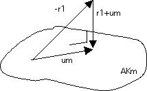\caption{The optimal update $u_m$ make the new residual orthogonal to the $AK_m$ subspace}
This is illustrated in figure 5.9 .
In this section you will see the basic idea of iterating by orthogonalization. The method presented here is only of theoretical interest; next you will see the CG and GMRES methods that are the basis of many real-life applications.
Let us now take the basic scheme \eqref{eq:general-xr-hessenberg} and orthogonalize the residuals. Instead of the normal inner product we use the $K\inv$-inner product: \[ (x,y)_{K\inv} = x^tK\inv y \] and we will force residuals to be $K\inv$-orthogonal: \[ \forall_{i\not=j}\colon r_i\perp_{K\inv} r_j \Leftrightarrow \forall_{i\not=j}\colon r_iK\inv r_j=0 \] This is known as the FOM scheme:
Let $r_0$ be given
For $i\geq 0$:
\>let $s\leftarrow K\inv r_i$
\>let $t\leftarrow AK\inv r_i$
\>for $j\leq i$:
\>\>let $\gamma_j$ be the coefficient so that $t-\gamma_jr_j\perp r_j$
\>for $j\leq i$:
\>\>form $s\leftarrow s-\gamma_jx_j$
\>\>and \>$t\leftarrow t-\gamma_jr_j$
\>let $x_{i+1}=(\sum_j\gamma_j)\inv s$,
$r_{i+1}=(\sum_j\gamma_j)\inv t$.
You may recognize the Gram-Schmidt orthogonalization in this (see appendix 13.2 for an explanation): in each iteration $r_{i+1}$ is initially set to $AK\inv r_i$, and orthogonalized against $r_j$ with $j\leq i$.
We can use modified Gram-Schmidt by rewriting the algorithm as:
Let $r_0$ be given
For $i\geq 0$:
\>let $s\leftarrow K\inv r_i$
\>let $t\leftarrow AK\inv r_i$
\>for $j\leq i$:
\>\>let $\gamma_j$ be the coefficient so that $t-\gamma_jr_j\perp r_j$
\>\>form $s\leftarrow s-\gamma_jx_j$
\>\>and \>$t\leftarrow t-\gamma_jr_j$
\>let $x_{i+1}=(\sum_j\gamma_j)\inv s$,
$r_{i+1}=(\sum_j\gamma_j)\inv t$.
These two version of the FOM algorithm are equivalent in exact arithmetic, but differ in practical circumstances in two ways:
Even though the FOM algorithm is not used in practice, these computational considerations carry over to the GMRES method below.
crumb trail: > linear > Iterative methods > Coupled recurrences form of iterative methods
Above, you saw the general equation \eqref{eq:general-xr-hessenberg} for generating iterates and search directions. This equation is often split as
The iteration dependent coefficients are typically chosen to let the residuals satisfy various orthogonality conditions. For instance, one can choose to let the method be defined by letting the residuals be orthogonal ($r_i^tr_j=0$ if $i\not=j$), or $A$-orthogonal ($r_i^tAr_j=0$ if $i\not=j$). Many more schemes exist. Such methods can converge much faster than stationary iteration, or converge for a wider range of matrix and preconditioner types. Below we will see two such methods; their analysis, however, is beyond the scope of this course.
crumb trail: > linear > Iterative methods > The method of Conjugate Gradients
In this section, we will derive the CG method, which is a specific implementation of the FOM algorithm. In particular, it has pleasant computational properties in the case of an SPD matrix $A$.
The CG method takes as its basic form the coupled recurrences formulation described above, and the coefficients are defined by demanding that the sequence of residuals $r_0,r_1,r_2,…$ satisfy \[ r_i^tK\inv r_j=0\quad\hbox{if $i\not=j$}. \] We start by deriving the CG method for nonsymmetric systems, and then show how it simplifies in the symmetric case. (The approach here is taken from [Eijkhout2010ICCS-krylov] ).
The basic equations are
\begin{cases} x\_{i+1}=x\_i-\delta\_i p\_i \\ r\_{i+1}=r\_i-\delta\_iA p\_i \\ p\_{i+1} = K\inv r\_{i+1}+\sum\_{j\leq i}\gamma\_{ji+1} p\_j, \end{cases} \label{eq:xrp-update} \end{equation}where the first and third equation were introduced above, and the second can be found by multiplying the first by $A$ (check this!).
We will now derive the coefficients in this method by induction. In essence, we assume that we have current residual $r_{\mathrm{cur}}$, a residuals to be computed $r_{\mathrm{new}}$, and a collection of known residuals $R_{\mathrm{old}}$. Rather than using subscripts `old, cur, new', we use the following convention:
In terms of these quantities, the update equations are then
\begin{cases} x\_2=x\_1-\delta\_1 p\_1 \\ r\_2=r\_1-\delta\_iA p\_1 \\ p\_2 = K\inv r\_2+\upsilon\_{12}p\_1+P\_0u\_{02} \end{cases} \label{eq:cg-updates-xrp} \end{equation}where $\delta_1,\upsilon_{12}$ are scalars, and $u_{02}$ is a vector with length the number of iterations before the current. We now derive $\delta_1,\upsilon_{12},u_{02}$ from the orthogonality of the residuals. To be specific, the residuals have to be orthogonal under the $K\inv$ inner product: we want to have \[ r_2^tK\inv r_1=0,\qquad r_2^tK\inv R_0=0. \] Combining these relations gives us, for instance, \[ \left. \begin{array}{l} r_1^tK\inv r_2=0\\ r_2=r_1-\delta_iAK\inv p_1 \end{array} \right\} \Rightarrow \delta_1 = \frac{r_1^tK\inv r_1}{r_1^tK\inv Ap_1}. \] Finding $\upsilon_{12},u_{02}$ is a little harder. For this, we start by summarizing the relations for the residuals and search directions in equation \eqref{eq:xrp-update} in block form as \[ (R_0,r_1,r_2) \left( \begin{array}{r|c|c} \begin{matrix} 1\\ -1&1\\ &\ddots&\ddots \end{matrix} &&\\ \hline -1&1&\\ \hline &-1&1 \end{array} \right) = A(P_0,p_1,p_2)\diag(D_0,d_1,d_2) \] \[ (P_0,p_1,p_2) \begin{pmatrix} I-U_{00}&-u_{01}&-u_{02}\\ &1&-\upsilon_{12}\\ &&1 \end{pmatrix} = K\inv (R_0,r_1,r_2) \] or abbreviated $RJ=APD$, $P(I-U)=R$ where $J$ is the matrix with identity diagonal and minus identity subdiagonal. We then observe that
Some observations about this derivation.
\begin{center} \leavevmode \framebox[4.5in]{\vbox{
Compute $r^{(0)} = Ax^{(0)} - b$ for some initial guess $x^{(0)}$
{\bf for } $ i = 1, 2, \ldots$
{\bf solve} $Kz^{(i-1)}=r^{(i-1)}$
$\rho_{i-1}=r^{(i-1)^T}z^{(i-1)}$
{\bf if} $i = 1$
$p^{(1)} = z^{(0)}$
{\bf else}
$\beta_{i-1} = \rho_{i-1} / \rho_{i-2} $
$p^{(i)} = z^{(i-1)} + \beta_{i-1}p^{(i-1)} $
{\bf endif}
$q^{(i)}=Ap^{(i)}$
$\delta_i = \rho_{i-1}/p^{(i)^T}q^{(i)}$
$x^{(i)} = x^{(i-1)} - \delta_ip^{(i)} $
$r^{(i)} = r^{(i-1)} - \delta_iq^{(i)} $
check convergence; continue if necessary
{\bf end}
}}
FIGURE 5.10: The Preconditioned Conjugate Gradient Method
\end{center}Do a flop count of the various operations in one iteration of the CG method. Assume that $A$ is the matrix of a five-point stencil and that the preconditioner $M$ is an incomplete factorization of $A$ (section 5.5.6.1 ). Let $N$ be the matrix size.
crumb trail: > linear > Iterative methods > Derivation from minimization
The above derivation of the CG method is not often found in the literature. The typical derivation starts with a minimization problem with a SPD matrix $A$:
\hbox{For which vector $x$ with $\|x\|=1$ is $f(x)=1/2\, x^tAx-b^tx$ minimal?} \end{equation}If we accept the fact that the function $f$ has a minimum, which follows from the positive definiteness, we find the minimum by computing the derivative \[ f'(x) = Ax-b. \] and asking where $f'(x)=0$. And, presto, there we have the original linear system.
Derive the derivative formula above. (Hint: write out the definition of derivative as $\lim_{h\downarrow0}…$.) Note that this requires $A$ to be symmetric.For the derivation of the iterative method, we state that the iterate $x_i$ is updated with a certain step size $\delta_i$ along a search direction $p_i$: \[ x_{i+1} = x_i+p_i\delta_i \] The optimal step size \[ \delta_i=\frac{r_i^tp_i}{p_1^tAp_i} \] is then derived as the one that minimizes the function $f$ along the line $x_i+\delta\delta p_i$: \[ \delta_i = \argmin_\delta \| f(x_i+p_i\delta) \| \] The construction of the search direction from the residuals follows by induction proof from the requirement that the residuals be orthogonal. For a typical proof, see [AxBa:febook] .
crumb trail: > linear > Iterative methods > GMRES
In the discussion of the CG method above, it was pointed out that orthogonality of the residuals requires storage of all residuals, and $k$ inner products in the $k$'th iteration. Unfortunately, it can be proved that the work savings of the CG method can, for all practical purposes, not be found outside of SPD matrices [FaberManteuffel:conditions-for-existence] .
The GMRES method is a popular implementation of such full orthogonalization schemes. In order to keep the computational costs within bounds, it is usually implemented as a restarted method. That is, only a certain number (say $k=5$ or 20) of residuals is retained, and every $k$ iterations the method is restarted. fig:pgmres .
Other methods exist that do not have the growing storage demands of GMRES , for instance QMR [FrNa:qmr] and BiCGstab [vdVorst1992:bicgstab] . Even though by the remark above these can not orthogonalize the residuals, they are still attractive in practice.
crumb trail: > linear > Iterative methods > Complexity
The efficiency of Gaussian elimination was fairly easy to assess: factoring and solving a system takes, deterministically, $\frac13n^3$ operations. For an iterative method, the operation count is the product of the number of operations per iteration times the number of iterations. While each individual iteration is easy to analyze, there is no good theory to predict the number of iterations. (In fact, an iterative method may not even converge to begin with.) Added to this is the fact that Gaussian elimination can be coded in such a way that there is considerable cache reuse, making the algorithm run at a fair percentage of the computer's peak speed. Iterative methods, on the other hand, are much slower on a flops per second basis.
All these considerations make the application of iterative methods to linear system solving somewhere in between a craft and a black art. In practice, people do considerable experimentation to decide whether an iterative method will pay off, and if so, which method is preferable.
crumb trail: > linear > Eigenvalue methods
In this chapter we have so far limited ourselves to linear system solving. Eigenvalue problems are another important category of linear algebra applications, but their interest lies more in the mathematics than the computations as such. We give a brief outline of the type of computations involved.
crumb trail: > linear > Eigenvalue methods > Power method
The power method is a simple iteration process: given a matrix $A$ and an arbitrary starting vector~$v$, compute repeatedly \[ v\leftarrow Av,\quad v\leftarrow v/\|v\|. \] The vector $v$ quickly becomes the eigenvector corresponding to the eigenvalue with maximum absolute size, and so $\|Av\|/\|v\|$ becomes an approximation to that largest eigenvalue.
Applying the power method to $A\inv$ is known as
and it yields the inverse of the eigenvalue that is smallest in absolute magnitude.
Another variant of the power method is the
which can be used to find interior eigenvalues. If $\sigma$ is close to an interior eigenvalue, then inverse iteration on $A-\sigma I$ will find that interior eigenvalue.
crumb trail: > linear > Eigenvalue methods > Orthogonal iteration schemes
The fact that eigenvectors to different eigenvalues are orthogonal can be exploited. For instance, after finding one eigenvector, one could iterate in the subspace orthogonal to that. Another option is to iterate on a block of vectors, and orthogonalizing this block after each power method iteration. This produces as many dominant eigenvalue as the block size. The restarted Arnoldi method~ [leho:95] is an example of such a scheme.
crumb trail: > linear > Eigenvalue methods > Full spectrum methods
The iterative schemes just discussed yield only localized eigenvalues. Other methods compute the full spectrum of a matrix. The most popular of these is the QR method .
crumb trail: > linear > Eigenvalue methods > Parallel execution
Lanczos-based schemes are more readily parallelized than the QR method; see~ [berry:inria-svdpar] for a discussion.
\furtherreading
Iterative methods is a very deep field. As a practical introduction to the issues involved, you can read the `Templates book' [Ba:templates] , online at http://netlib.org/templates/ . For a deeper treatment of the theory, see the book by Saad [saad96] of which the first edition can be downloaded at http://www-users.cs.umn.edu/ saad/books.html .